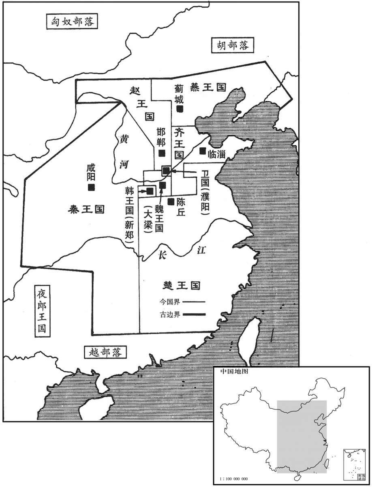
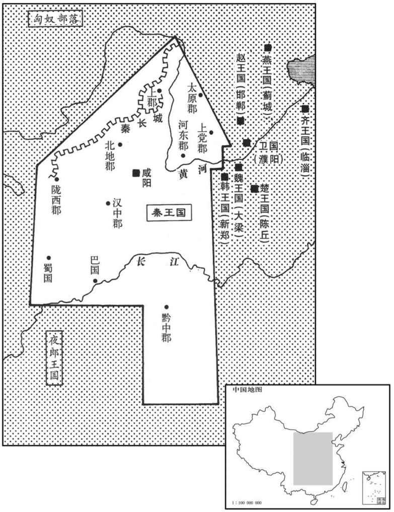
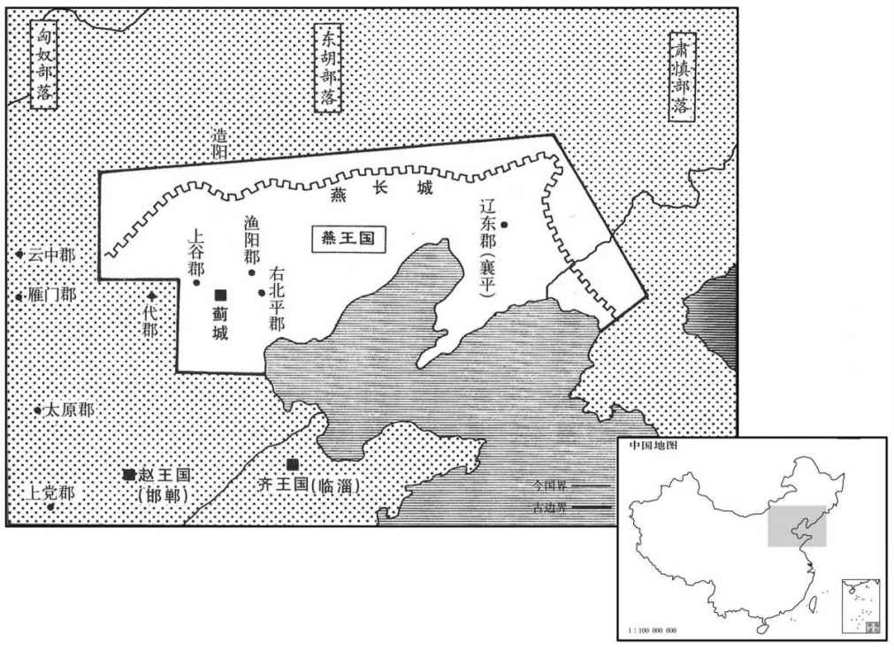
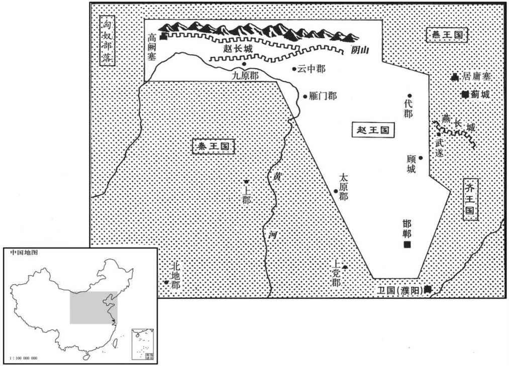
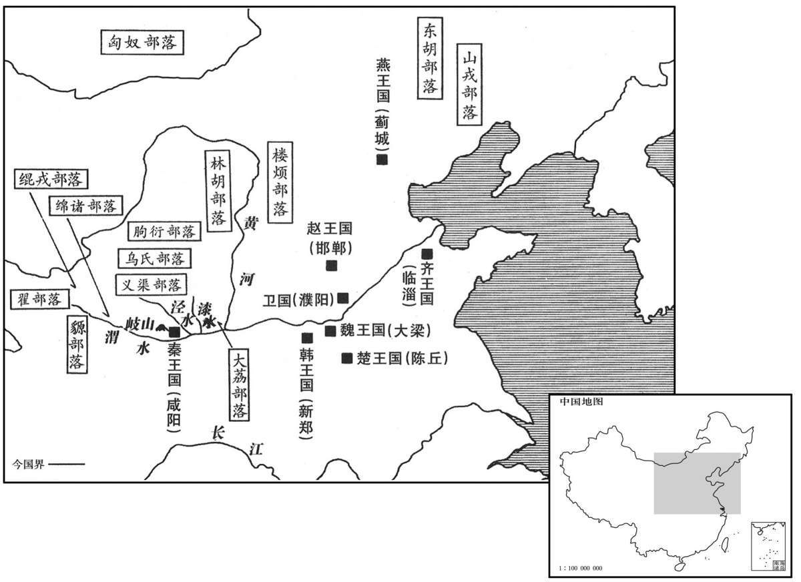
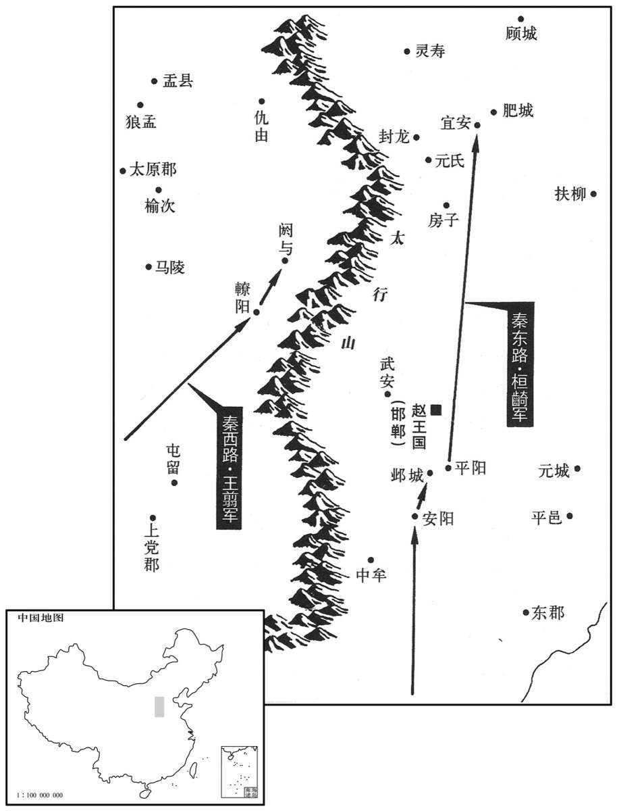
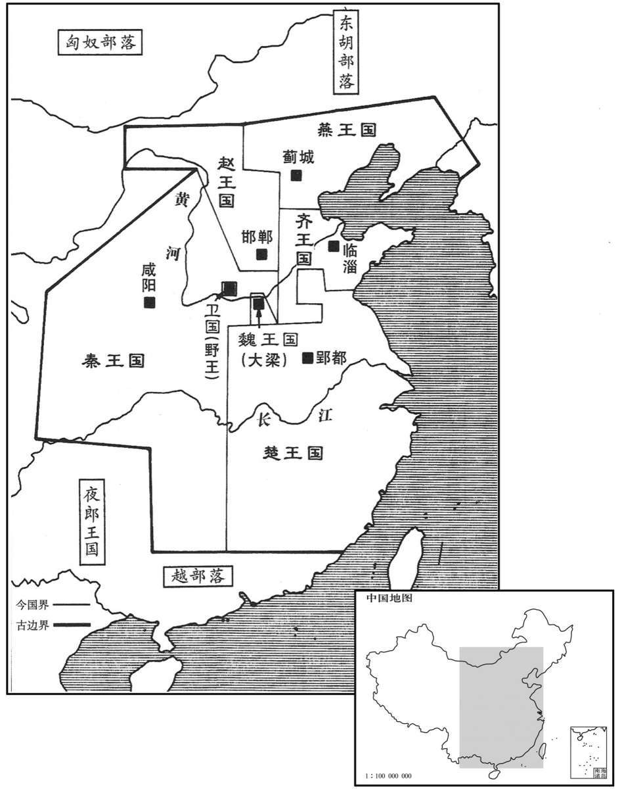

卷次与人物目录 / 卷6
资治通鉴 · 卷第六【秦纪一】
公元前255年至公元前228年 · 原文、白话与胡三省注
本页按胡注本编排保存全卷内容。白话采用本站所据译本，未可靠对应的内容另列说明；事件标题用于定位，并非原书文字。
本卷共98段原文，98段有译文对应，0段缺译或待核对。
卷第六【秦纪一】起柔兆敦牂（丙午），尽昭阳作噩（癸酉），凡二十八年。
卷首原文与注释
〔陆德明曰：秦，陇西谷名也，在雍州鸟鼠山之东北。秦之先非子，为周孝王养马于汧、渭之间，封为附庸，邑之秦谷。非子曾孙秦仲，周宣王命为大夫。仲之孙襄公，讨西戎救周，平王东迁，以岐、丰之地赐之，列为储候。春秋时称秦伯。〕
昭襄王〔名稷，惠文王庶子也。西周既亡，天下莫适为主。通鉴以秦卒并天下，因以昭襄王系年。谥法：昭德有劳日昭；辟地有德曰襄。以沈约谧法言之，则昭襄复谥也。卒，子恤翻。谧，神至翻。辟，读曰辟。〕
公元前255年 · 昭襄王在位第52年
五十二年〔（丙午、前二五五）〕
本年事件索引（现代整理）
河东守王稽坐与诸侯通。弃市。〔河东本魏地，秦取之，以其地在大河之东，置河东郡。守，式又翻。刑人于市，与众弃之。秦法论死于市，谓之弃市。〕应侯日以不怿。〔王稽荐范睢于秦王，睢既相秦，稽亦进用，今以罪死，故睢日以不怿。怿，悦也。不怿，不悦也。应，于陵翻。或曰：范睢之初进用于秦，至于为相，昭襄王诚悦之也，郑安平既降赵，王稽又得罪，睢虽为相，昭襄王临朝接之，日以不悦。怿，羊益翻。〕王临朝而叹，〔朝，直遥翻。〕应侯请其故。王曰：“今武安君死，而郑安平、王稽等皆畔，内无良将而外多敌国，吾是以忧！”〔将，既亮翻。〕应侯惧，不知所出。
河东郡郡守王稽因犯通敌罪被判斩弃于市。应侯范睢为此闷闷不乐。昭襄王嬴稷在坐朝治事时发声长叹，范睢询问其缘故。昭襄王说：“现在武安君白起已死，郑安平、王稽等又都背叛了，国家内无良将，外却有许多敌国，我因此而忧虑！”范睢颇为恐惧，想不出用什么办法。
本段人物：范雎
燕客蔡泽闻之，〔燕，于贤翻。蔡，姓也，以国为氏。〕西入秦，先使人宣言于应侯曰，“蔡泽，天下雄辩之士；彼见王，必困君而夺君之位。”应侯怒，使人召之。蔡泽见应侯，礼又倨。〔倨，居御翻，傲也。〕应侯不快，因让之曰：“子宣言欲代我相，〔相，息亮翻。〕请闻其说。”蔡泽曰：“吁，〔孔安国曰：吁，疑怪之辞。孔颖达曰：吁者，心有所嫌而为此声，故以为疑怪之辞也。〕君何见之晚也。夫四时之序，成功者去。〔谓春生，夏长，秋就实，冬闭藏，各成其功而相代谢也！夫，音扶；下同。〕君独不见夫秦之商君、楚之吴起、越之大夫种，何足愿与。”〔商君事见二卷周显王三十一年。吴起事见一卷安王二十一年。大夫种相越王句践以雪会稽之耻，功成不退，为句践所杀。种，温公音章勇翻。与，读曰欤。句，音钩。践，慈浅翻。种，章勇翻。〕应侯谬曰：“何为不可！此三子者，义之至也，忠之尽也。君子有杀身以成名，死无所恨。”蔡泽曰：“夫人立功，岂不期于成全邪！〔应，于陵翻。谬，靡幼翻。邪，音耶。〕身名俱全者，上也；名可法而身死者，次也；名僇辱而身全者，下也。〔僇，与戮同。〕夫商君、吴起、大夫种，其为人臣尽忠致功，则可愿矣。闳夭、周公，岂不亦忠且圣乎！三子之可愿，孰与闳夭、周公哉？”〔闳夭，周文王、武王之贤臣。闳，音宏。夭，于骄翻，又于表翻。〕应候曰：“善。”蔡泽曰：“然则君之主敦厚旧故，不倍功臣，孰与孝公、楚王、越王？”〔倍，与背同，蒲昧翻。〕曰：“未知何如。”蔡泽曰：“君之功能孰与三子？”曰：“不若。”蔡泽曰：“然则君身不退，患恐甚于三子矣。语曰：『日中则移，月满则亏』进退嬴缩，〔五星早出为嬴，晚出为缩。嬴，余轻翻、缩，所六翻。〕与时变化，圣人之道也。今君之怨已雠而德已报，〔怨已雠，谓杀魏齐；德已报，谓进用王稽、郑安平等。〕意欲至矣而无变计，窃为君危之！”〔为，于伪翻。〕应侯遂延以为上客，因荐于王。王召与语，大悦，拜为客卿。应侯因谢病免。王新悦蔡泽计画，遂以为相国。泽为相数月，免。〔相，息亮翻。〕
燕国的客卿蔡泽听说了这件事，便向西进入秦国，先让人向范睢扬言说：“蔡泽是天下能言善辩之士，他一见到秦王，就必会使您为难，进而夺取您的位置。”范睢很生气，遣人召蔡泽来见。蔡泽进见时态度傲慢不敬，使范睢大为不快，因此斥责他说：“你扬言要取代我做秦国的相国，那就让我听听你的根据。”蔡泽说：“吁，您见事何其迟啊！四个季节按春生、夏长、秋实、冬藏的次序，各完成它的功能而转换下去。您难道没有看到秦国的商鞅、楚国的吴起、越国的文种的下场吗？这有什么值得羡慕的呢？”范睢故意辩驳说：“有什么不可以的！这三个人的表现是节义的准则，忠诚的典范呀！君子可以杀身成名，并且死而无憾。”蔡泽说：“人们要建功立业，怎么会不期望着功成名就、全身而退呢！身命与功名都能保全的，是上等的愿望；功名可以为后人景仰效法而身命却已失去的，就次一等了；声名蒙受耻辱而自身得以苟全的，便是最下一等的了。商鞅、吴起、文种，他们作为臣子竭尽全力忠于君主取得了功名，这是可以为人仰慕的。但是闳夭、周公不也是既忠心耿耿又道德高尚、智慧过人吗！从君臣关系上说，那三人虽然令人仰慕，可又哪里比得上闳夭、周公啊？”范睢说：“是啊。”蔡泽说：“如此说来，您的国君在笃念旧情、不背弃有功之臣这点上能与秦孝公、楚悼王、越王哪一个相比呢？”范睢说：“我不知道能不能比。”蔡泽说：“那么您与商鞅等三人相比，谁的功绩更大呢？”范睢说：“我不如他们。”蔡泽说：“这样的话，如果您还不引退，将遇到的灾祸恐怕要比那三位更严重了。俗话说：‘太阳升到中天就要偏斜而西，月亮圆满了即会渐见亏缺。’进退伸缩，随时势的变化进行调整以求适应，是圣人的法则。现在您仇也报了，恩也报了，心愿完全得到满足却还不作变化的打算，我私下里为您担忧！”范睢于是将蔡泽奉为上宾，并把他推荐给昭襄王。秦王召见蔡泽，与他交谈，十分喜爱他，便授与他客卿的职位。范睢随即以生病为借口辞去了相国之职。昭襄王一开始就赞赏蔡泽的计策，便任命他为相国。但蔡泽任相国几个月后，即被免职。
本段人物：范雎
楚春申君以荀卿为兰陵令。〔姓谱：荀，本姓郇，后去“邑”为“荀”。又晋荀林父，公侯隰叔之后。班志，兰陵县属东海郡。史记正义曰：今沂州承县有兰陵山。〕荀卿者，赵人，名况，尝与临武君论兵于赵孝成王之前。王曰：“请问兵要。”临武君对曰：“上得天时，下得地利，观敌之变动，后之发，先之至，此用兵之要术也。”〔后、先，皆去声。〕荀卿曰：“不然，臣所闻古之道，凡用兵攻战之本，在乎一民。弓矢不调，则羿不能以中，六马不和，则造父不能以致远，〔羿，古之善射者；造父，古之善御者也。羿，音诣。中，竹仲翻。父，音甫。〕士民不亲附，则汤、武不能以必胜也。故善附民者，是乃善用兵者也。故兵要在乎附民而已。”临武君曰：“不然。兵之所贵者势利也，所行者变诈也。善用兵者感忽悠暗，〔杨倞曰：感忽，恍惚也。悠暗，谓远视不分之貌。〕莫知所从出；孙、吴用之，无敌于天下，岂必待附民哉！”荀卿曰：“不然。臣之所道，仁人之兵，王者之志也。君之所贵，权谋势利也。仁人之兵，不可诈也。彼可诈者，怠慢者也，露袒者也，〔露袒，如人之支体上下无衣裳以覆蔽，裸露肉袒者也。〕君臣上下之间滑然有离德者也。〔滑，音骨，乱也。〕故以桀诈桀，犹巧拙有幸焉。以桀诈尧，譬之以卵投石，以指桡沸，〔桡，奴巧翻，又奴教翻，搅也。〕若赴水火，入焉焦没耳。故仁人之兵，上下一心，三军同力；臣之于君也，下之于上也，若子之事父，弟之事兄，若手臂之捍头目而覆胸腹也。〔覆，敷救翻，盖也。〕诈而袭之，与先惊而后击之，一也。且仁人用十里之国则将有百里之听，用百里之国则将有千里之听，用千里之国则将有四海之听，必将聪明警戒，和傅而一。〔康曰：将，音将帅之将。余据文义，读如字为通。傅，音附。〕故仁人之兵，聚则成卒，〔百人为卒。〕散则成列，延则若莫邪之长刃，〔莫邪，吴之宝剑也。说文：莫邪，长戟也。邪，音耶。〕婴之者断，兑则若莫邪之利锋，当之者溃；〔“兑”，刘向新序作“锐”。杨倞曰：兑，犹聚也，读与队同。倞，音谅。〕圜居而方止，则若盘石然，触之者角摧而退耳。且夫暴国之君，将谁与至哉？〔夫，音扶。〕彼其所与至者，必其民也。其民之亲我欢若父母，其好我芬若椒兰，彼反顾其上则若灼黥，若仇雠；人之情，虽桀、跖，岂有肯为其所恶，贼其所好者哉！〔字书：仇、雠，皆匹也。说文：仇雠也。雠，犹应也。左传：怨耦曰仇。记曰：父之雠，不与共戴天。盖谓仇之初匹也。至于耦而成怨，则为仇。雠，校也，两本相对，覆校是非也。杀父之人一旦相对，覆校是非，则不共戴天矣。仇雠之义，至此为甚，后世率以为言。好，呼到翻。为，于伪翻。恶，乌路翻。〕是犹使人之子孙自贼其父母也。彼必将来告〔【章：十二行本“告”下有“之”字；乙十一行本同；孔本同；退斋校同。】〕“夫又何可诈也，故仁人用，国日明，诸侯先顺者安，后顺者危，敌之者削，反之者亡。诗曰：『武王载发，有虔秉钺，如火烈烈，则莫我敢遏，』此之谓也。”〔商颂之辞。武王，汤也。依商颂读为斾。古者军将战则建商斾。〕
楚国春申君黄歇任用荀卿为兰陵县令。荀卿是赵国人，名况，曾经与临武君在赵国国君孝成王赵丹面前辩论用兵之道。孝成王说：“请问什么是用兵的要旨？”临武君回答道：“上得天时，下得地利，观察敌人的变化动向，比敌人后发兵而先到达，这即是用兵的关键方略。”荀况说：“不是这样。我所听说的古人用兵的道理是，用兵攻战的根本，在于统一百姓。弓与箭不协调，就是善射的后羿也不能射中目标；六匹马不协力一致，即便善御的造父也无法将马车赶往远方；士人与百姓不和亲附国君，即是商汤、周武王也不能有必胜的把握。因此，善于使百姓归附的人，才是善于用兵的人。所以用兵的要领在于使百姓依附。”临武君说：“并非如此。用兵所重视的是形势要有利，行动要讲究诡诈多变。善用兵的人，行事疾速、隐蔽，没有人料得到他会从哪里出动。孙武、吴起采用这种战术，天下无敌，不见得一定要依靠百姓的归附啊！”荀况说：“不对。我所说的，是仁人的用兵之道和要统治天下的帝王的志向。您所看重的是权术、谋略、形势、利害。则仁人用的兵，是不能欺诈的。能够施用欺骗之术对付的，是那些骄傲轻慢的军队、疲惫衰弱的军队，以及君与臣、上级与下属之间不和相互离心离德的军队。因此用夏桀的诈术对付夏桀，还有使巧成功或使拙失败的可能。而用夏桀的骗计去对付尧，就如同拿鸡蛋掷石头，把手指伸进滚水中搅动，如同投身到水火之中，不是被烧焦，便是被淹死。故而仁人的军队，上下一条心，三军同出力；臣子对国君，下属对上级，犹如儿子侍奉父亲，弟弟侍奉哥哥，犹如用手臂保护头颅、眼睛、胸膛和腹部。这样的军队，用欺诈之术去袭击它，与先惊动了它而后才去攻击它，是一回事。况且，仁人若统治着十里的国家，他的耳目将布及百里，若统治着百里的国家，他的耳目便将布及千里，若统治着千里的国家，他的耳目就会遍及天下，这样，他必将耳聪目明、机警而有戒备，和众如一。因此仁人的军队，集结起来即为一支支百人的部队，分散开时即成战阵行列；延长伸展好似莫邪宝剑的长刃，碰上的即被斩断；短兵精锐仿佛莫邪宝剑的利锋，遇到的即被瓦解；安营扎寨稳如磐石，顶撞它的，角即遭摧折而退却。再说那暴虐国家的君主，他所依靠的是什么呢？只能是他的百姓。而他的百姓爱我就如同爱他的父母，喜欢我就如同喜欢芬芳的椒兰；反之，想起他的君主好似畏惧遭受烧灼黥刑，好似面对不共戴天的仇敌一般。人之常情，即便是夏桀、盗跖，也不会为他所厌恶的人去残害他所喜爱的人！这就犹如让人的子孙去杀害自己的父母，是根本不可能的。如此，百姓一定会前来告发君主，那又有什么诈术可施呢！所以，由仁人治理国家，国家将日益强盛，各诸侯国先来归顺的则得到安定，后来依附的即遭遇危难；相对抗的将被削弱，进行反叛的即遭灭亡。《诗经》所谓‘商汤竖起大旗，诚敬地握着斧钺，势如熊熊烈火，谁敢把我阻拦？’正是说的这种情况。”
孝成王，临武君曰：“善。请问王者之兵，设何道，何行而可？”〔杨倞曰：设，谓制置。道，谓论说教令也。行，谓动用也。〕荀卿曰：“凡君贤者其国治，君不能者其国乱，隆礼贵义者其国治，简礼贱义者其国乱。治者强，乱者弱，是强弱之本也。”〔治，直吏翻。〕上足昂则下可用也，上不足昂则下不可用也。〔昂，古仰字，音鱼向翻。杨倞曰：下托上曰仰。〕下可用则强，下不可用则弱，是强弱之常也。齐章：〔十二行本“齐”上有“好士者强，不好士者弱；爱民者强，不爱民者弱；政令信者强，政令不信者弱；重用兵者强，轻用兵者弱；权出一者强，权出二者弱；是强弱之常也。”五十五字。乙十一行本同；孔本同；张校同；退斋校同。〕人隆技击，〔孟康曰：技击者，兵家之技巧，习手足，便器械，积机关，以立攻守之胜者也。杨倞曰：技，材力赐也。齐人以勇力击斩敌者，号为技击。隆，重也。技，渠绮翻。〕其技也，得一首者则赎锱金，无本赏矣。〔杨倞曰：八两曰锱。本赏，谓有功同受赏也。其技击之术，斩得一首，则官赐以锱金赎之。斩首，虽战败亦赏；不斩首，虽胜亦不赏：是无本赏矣。锱，庄持翻。〕是事小敌毳，则偷可用也；〔毳，与脆同，音此芮翻。〕事大敌坚，则涣焉离耳；若飞鸟然，倾侧反复无日，是亡国之兵也，兵莫弱是矣，是其去赁市佣而战之几矣。〔赁，女禁翻。毛晃曰：借也，僦也。市佣，谓市人之受雇者也。〕魏氏之武卒，以度取之；〔杨倞曰：选择武勇之士，号为武卒，度取之，谓取长短材力之中度者也。〕衣三属之甲，〔如淳曰：三身一，髀裈一，胫缴一，凡三属。衣，于既翻。属，之欲翻。〕操十二石之弩，〔沈括曰：钧石之石，五权之名，石重百二十斤。后人以一斛为一石，自汉时已如此，于定国饮酒一石不乱是也。挽强弓弩，古人以钧石率之。今人乃以米一斛之重为一石，凡石以九十二斤半为法，乃汉秤三百四十一斤也。今之武卒蹶弩有及九石者，计其力乃古二十五石，比魏之武卒，当二人有余。弓有挽三石者，乃古之二十四钧，比颜高之弓当五人有余。此皆近世教习所致。武备之盛，前古未有其比。案括之论详矣；然用之则误国丧师，不知合变，是赵括之谈兵也。操，七刀翻。〕负矢五十个，置戈其上，〔谓置戈于身之上，即荷戈也。荷，下可翻。〕冠胄带剑，赢三〔【章：十二行本“三”作“二”，乙十一行本同。】〕日之粮，日中而趋百里；中试则复其户，利其田宅。〔中试，言程试而中度者，复其户，不徭役也。利其田宅，给以田宅便利之处。胄，今之兜鍪。冠，古玩翻。赢，怡成翻，担也。中，竹仲翻。复，方目翻。〕是其气力数年而衰，而复利未可夺也，改造则不易周也，〔改造，谓更选择也。易，弋豉翻。〕是故地虽大，其税必寡，是危国之兵也。秦人，其生民也陿隘，其使民也酷烈，劫之以势，隐之以厄，忸之以庆赏，鳅之以刑罚，〔陿，与狭同。隘，乌懈翻。杨倞曰：隐之以厄，谓隐蔽以险厄，使敌不能害。郑氏曰：秦地多厄，隐藏其民于厄中也。忸，与狃同，串习也。战胜则与之庆赏，使习以为常。鳅，藉也。不胜则以刑罚陵藉之。庄子：风谓蛇曰，鳅我亦胜我。陆德明音义曰：鳅，音秋，藉也。李云鳅，藉也；藉则削也。忸，女九翻。〕使民所以要利于上者，非无由也。使以功赏相长，五甲首而隶五家，〔杨倞曰：有功则赏之，使相长，凡获得五甲首则役隶乡里之五家也。要，一遥翻。长，知两翻。〕是最为众强长久之道。故四世有胜，非幸也，数也。〔四世，谓秦孝公、惠文王、悼武王、昭襄王。〕故齐之技击不可以遇魏之武卒，魏之武卒不可以遇秦之锐士，秦之锐士不可以当桓、文之节制，桓、文之节制不可以当汤、武之仁义，有遇之者，若以焦熬投石焉。〔焦熬之物至脆，投石则碎。熬，五刀翻。〕兼是数国者，皆干赏蹈利之兵也，佣徒鬻卖之道也；未有贵上安制綦节之理也。〔杨倞曰：干赏蹈利之兵，与佣徒之人鬻卖其力而作者无异，未有爱贵其上而为之致死。安于制度，自不逾越，极于节义，心不为非之理也。〕诸侯有能微妙之以节，则作而兼殆之耳。〔杨倞曰：微妙，精尽也。节，仁义也。作，起也。殆，危也。诸侯有能精尽仁义，则起而兼此数国，使之危殆。〕故招延募选，隆势诈，上功利，是渐之也。〔渐，浸渍也。言势诈功利渐染以成俗。渐，子廉翻。〕礼义教化，是齐之也。故以诈遇诈，犹有巧拙焉；以诈遇齐，譬之犹以锥刀堕泰山也。〔谓礼义教化之所齐，以诈遇之，无不败者。堕，读曰隳。〕故汤、武之诛桀、纣也，拱挹指麾，而强暴之国莫不趋使，〔挹，一及翻，义与揖同。〕诛桀、纣若诛独夫。故泰誓曰：『独夫纣，』此之谓也。故兵大齐则制天下，小齐则治邻敌。〔治，直之翻。〕若夫招延募选，隆势诈，上功利之兵，〔夫，音扶；下同。〕则胜不胜无常，代翕代张，代存代亡，相为雌雄耳，夫是谓之盗兵，君子不由也。”
孝成王、临武君说：“对啊。那么请问君王用兵，应该建立什么教令、如何行动才好呢？”荀况答道：“总的说来，君王贤明的，国家就太平；君王无能的，国家就混乱；推崇礼教、尊重仁义的，国家就治理得好，荒废礼教、鄙视仁义的，国家就动荡不安。秩序井然的国家便强大，纲纪紊乱的国家便衰弱，这即是强与弱的根本所在。君王的言行足以为人敬慕，百姓才可接受驱使，君王的言行不能为人景仰，百姓也就不会服从召唤。百姓可供驱使的，国家就强大，百姓不服调遣的，国家就衰弱，这即是强与弱的常理所在。齐国人重视兵家的技巧技击，施展技击之术，斩获一颗人头的，由官方赐八两金换回，不是有功同受赏。这样的军队遇到弱小的敌人，还可凑合着应付；一旦面对强大的敌军，就会涣然离散，如同天上的飞鸟，漫天穿行无拘无束，往返无常。这是亡国之军，没有比这种军队更衰弱的了，它与招募一群受雇佣的市井小人去作战相差无几。魏国按照一定的标准选拔武勇的士兵。择取时，让兵士披挂上全副铠甲，拉开十二石重的强弓，身背五十支利箭，手持戈，头戴盔，腰佩剑，携带三天的食粮，每日急行军一百里。达到这个标准的便为武勇之卒，即可被免除徭役，并分得较好的田地和住宅。但是这些士兵的气力几年后便开始衰退，而分配给他们的利益却无法再行剥夺，即使改换办法也不容易做得周全。故而，魏国的疆土虽大，税收却必定不多。这样的军队便是危害国家的军队了。秦国，百姓生计困窘，国家的刑罚却非常严酷，君王借此威势胁迫百姓出战，让他们隐蔽于险恶的地势，战胜了就给以奖赏，使他们对此习以为常，而战败了便处以刑罚，使他们为此受到箝制，这样一来，百姓要想从上面获得什么好处，除了与敌拼杀外，没有别的出路。功劳和赏赐成正比例增长，只要斩获五个甲士的头，即可役使乡里的五家，这就是秦国比其他国家强大稳固的原因。所以，秦国得以四代相沿不衰，并非侥幸，而是有其必然性的。故此齐国善技击术的军队无法抵抗魏国择勇武士兵的军队，魏国择勇武士兵的军队无法抵抗秦国精锐、进取的军队；而秦国精锐的士兵却不能抵挡齐桓公、晋文公约束有方的军队，齐桓公、晋文公约束有方的士兵又不能抵挡商汤、周武王的仁义的军队，一旦遇上了，势必如用薄脆的东西去打石头，触之即碎。况且那几个国家培养的都是争求赏赐、追逐利益的将领和士兵，他们就如同雇工靠出卖自己的力气挣钱那样，毫无敬爱国君，愿为国君拼死效力，安于制度约束，严守忠孝仁义的气节、情操。诸侯中如果有哪一个能够精尽仁义之道，便可起而兼并那几个国家，使它们陷入危急的境地。故在那几个国家中，招募或选拔士兵，推重威势和变诈，崇尚论功行赏，渐渐染成了习俗。但只有尊奉礼义教化，才能使全国上下一心，精诚团结。所以用诈术对付欺诈成俗的国家，还有巧拙之别；而若用诈术对付万众一心的国家，就犹如拿小刀去毁坏泰山了。所以商汤、周武王诛灭夏桀、商纣
孝成王、临武君曰：“善，请问为将。”〔将，即亮翻。〕荀卿曰：“知莫大于弃疑，〔杨倞曰：不用疑谋，此智之大。知，读曰智。〕行莫大于无过，〔行，下孟翻。〕事莫大于无悔；事至无悔而止矣，不可必也。〔言不可自以为必胜。〕故制号政令，欲严以威；庆赏刑罚，欲必以信；处舍收藏，欲周以固；〔杨倞曰：处舍，营垒也。收藏，财物也。周密严固，则敌不得而陵夺也。处，昌吕翻。〕徙举进退，欲安以重，欲疾以速，窥敌观变，欲潜以深，欲伍以参；〔杨倞曰：谓使间谍观敌，欲潜隐深入之也。伍参，犹错杂也。使间谍或参之，或伍之于敌之间，而尽知其事。韩子曰：省同异之言，以知朋党之分，偶参伍之验，以责陈言之实。又曰：参之以比物，伍之以合参。〕遇敌决战，必行吾所明，无行吾所疑；夫是之谓六术。无欲将而恶废，〔言欲为将而恶失权，则舍已之胜算，迁就以逢君之欲矣。将，即亮翻。〕无怠胜而忘败，无威内而轻外，无见其利而不顾其害，凡虑事欲熟而用财欲泰，夫是之谓五权。〔夫，音扶。〕将所以不受命于主有三：可杀而不可使处不完，可杀而不可使击不胜，可杀而不可使欺百姓，夫是之谓三至。〔杨倞曰：至，谓守一而不变。处，昌吕翻。〕凡受命于主而行三军，三军既定，百官得序，〔杨倞曰：百官，军之百吏也。〕群物皆正，则主不能喜，敌不能怒，夫是之谓至臣。虑必先事而申之以敬，慎终如始，始终如一，夫是之谓大吉。〔杨倞曰：言必无覆败之祸。〕凡百事之成也必在敬之，其败也必在慢之。故敬胜怠则吉。怠胜敬则灭；计胜欲则从，欲胜计则凶。战如守，行如战，有功如幸。敬谋无旷，敬事无旷，敬吏无旷，敬众无旷，敬敌无旷，夫是之谓五无旷。〔旷，废也。夫，音扶。〕慎行此六术、五权、三至，而处之以恭敬、无旷，夫是之谓天下之将，则通于神明矣。”
孝成王、临武君说：“对啊。那么还请问做将领的道理。”荀况说：“谋虑最关键的是抛弃成败不明的谋划，行动最重要的是不产生过失，做事最关键的是不后悔；事情做到没有反悔就可以了，不必一定要追求尽善尽美。所以制定号令法规，要严厉、威重；赏功罚过，要坚决执行、遵守信义；营垒、辎重，要周密、严固；迁移、发动、前进、后退，要谨慎稳重，快速敏捷；探测敌情、观察敌人的变化，要行动机密，混入敌方将士之中；与敌军遭遇，进行决战，一定要打有把握的仗，不打无把握的仗。这些称为‘六术’。不要为保住自己将领的职位和权力而放弃自己取胜的策略，去迁就迎合君王的主张；不要因急于胜利而忘记还有失败的可能；不要对内威慑，而对外轻敌；不要见到利益而不顾忌它的害处；考虑问题要仔细周详而使用钱财要慷慨宽裕。这些称为‘五权’。此外，将领在三种情况下不接受君主的命令：可以杀死他，但不可令他率军进入绝境；可以杀死他，但不可令他率军攻打无法取胜的敌人；可以杀死他，但不可令他率军去欺凌百姓。这些称为‘三至’。将领接受君主命令后即调动三军，三军各自到位，百官井然有序，各项事务均安排停当、纳入正轨，此时即便君主奖之也不能使之喜悦，敌人激之也不能使之愤怒。这样的将领是最善于治军的将领。行事前必先深思熟虑，步步慎重，而且自始至终谨慎如一，这即叫作‘大吉’。总之，各项事业，如果获得成功，必定是由于严肃对待这项事业；如果造成失败，必定是由于轻视这项事业。因此，严肃胜过懈怠，便能取得胜利，懈怠胜过严肃，便将自取灭亡；谋划胜过欲望，就事事顺利，欲望胜过谋划，就会遭遇不幸。作战如同守备一样，行动如同作战一样，获得成功则看作是侥幸取得。严肃制订谋略，不可废止；严肃处理事务，不可废止；严肃对待下属，不可废止；严肃对待兵众，不可废止；严肃对待敌人，不可废止，这些称为‘五不废’。谨慎地奉行以上‘六术’、‘五权’、‘三至’，并恪守严肃不废止的原则，这样的将领便是天下无人能及的将领，便是可以上通神明的了。”
临武君曰：“善。请问王者之军制。”荀卿曰：“将死鼓，”〔将，即亮翻。将建旗伐鼓以令三军之进退，死不离局。离，力智翻。〕御死辔，百吏死职，上〔【章：乙十一行本“上”作“士”。】〕大夫死行列。〔行，户刚翻。〕闻鼓声而进，闻金声而退。顺命为上，有功次之。令不进而进，犹令不退而退也，〔令，力正翻。〕其罪惟均。不杀老弱，不猎禾稼，服者不禽，格者不赦，奔命者不获。〔杨倞曰：服，谓不战而退者不追禽之。格，谓相拒捍者。奔命，谓奔走来归其命，不获之以为囚俘。〕凡诛，非诛其百姓也，诛其乱百姓者也。百姓有捍其贼，则是亦贼也。以其〔【章：十二行本“其”作“故”；乙十一行本同。】〕顺刃者生，傃刃者死，奔命者贡。〔杨倞曰：傃，向也，谓傃向格斗者。贡，谓取归命者献于上将也。傃，音素。〕微子开封于宋，〔殷纣暴虐，微子奔周。武王杀纣，封微子于宋。微子本名启，此云开者，盖汉景帝讳，刘向改之也。〕曹触龙断于军，〔杨倞曰：说苑云：桀为天子，其臣有左师触龙者，谄谀不正。此云纣，当是说苑误。按战国时赵亦有左师触龙，岂姓名同乎？姓谱：曹姓，本自颛顼玄孙陆终之子六安，周武王封曹挟于邾，故邾，曹姓也。至魏武帝，始祖曹叔振铎。〕商之服民，所以养生之者无异周人，故近者歌讴而乐之，远者竭蹶而趋之，〔以上下文观之，商、周二字恐或倒置。杨倞曰：竭蹶，颠仆，犹言匍匐也。乐，音洛。蹶，居月翻。〕无幽闲辟陋之国，莫不趋使而安乐之，〔闲，读曰闲。辟，读曰僻。〕四海之内若一家，通达之属莫不从服，夫是之谓人师。〔夫，音扶。〕诗曰：『自西自东，自南自北，无思不服。』此之谓也。〔引文王有声之诗而言。〕王者有诛而无战，城守不攻，兵格不击，敌上下相喜则庆之，不屠城，不潜军，不留众，师不越时，故乱者乐其政，不安其上，欲其至也。”〔乱国之民乐吾之政，故不安其上，惟欲吾兵之至也。乐，音洛。〕临武君曰：“善。”
临武君说：“有道理。那么请问圣明君王的军制又该怎样。”荀况说：“崐将领建旗击鼓号令三军，至死也不弃鼓奔逃；御手驾战车，至死也不放松缰绳；百官恪守职责，至死也不离开岗位；大夫尽心效力，死于战阵行列。军队听到鼓声即前进，听到钲声即后退，服从命令是最主要的，建功还在其次。命令不准前进而前进，犹如命令禁止后退而还要后退一样，罪过是相等的。不残杀老弱，不践踏庄稼，不追捕不战而退的人，不赦免相拒顽抗的人，不俘获跑来归顺的人。该诛杀时，诛杀的不是百姓，而是祸害百姓的人。但百姓中如果有保护敌人的，那么他也就成为敌人了。所以，不战而退的人生，相拒顽抗的人死，跑来归顺的人则被献给统帅。微子启因多次规劝商纣王，后归顺周王而受封为宋国国君，专门谄谀纣王的曹触龙被处以军中重刑，归附于周天子的商朝人待遇与周朝百姓没有区别，故而近处的人唱着歌欢乐地颂扬周天子，远方的人跌跌撞撞地前来投奔周天子。此外，不论是多么边远荒僻鄙陋的国家，周天子也派人去关照，让百姓安居乐业，以至四海之内如同一家，周王朝恩威所能达到的属国，没有不服从、归顺的。这样的君王即叫作‘人师’，即为人表率的人。《诗经》说：‘自西自东，自南自北，无思不服。’就是指的这个。圣明君王的军队施行惩处而不挑起战争，固守城池而不发动进攻，与敌对阵作战而不先行出击，敌人上上下下喜悦欢欣就庆贺，并且不洗劫屠戮敌方的城镇，不偷袭无防备的敌人，不使将士们长久地滞留在外，军队出动作战不超越计划的时间，如此，便使混乱国家的百姓都喜欢这种施政方式，而不安心于受自己国君的统治，希望这种君王的军队到来。”临武君说：“你说的不错。”
陈嚣问荀卿曰：〔嚣，虚骄翻；又牛刀翻。〕”先生议兵，常以仁义为本，仁者爱人，义者循理，然则又何以兵为？凡所为有兵者，为争夺也。“〔为争，于伪翻。〕荀卿曰：“非汝所知也。彼仁者爱人，爱人，故恶人之害之也，义者循理，循理，故恶人之乱之也。〔恶，乌路翻。〕彼兵者，所以禁暴除害也，非争夺也。”
陈嚣问荀况说：“您议论用兵之道，总是以仁义为根本，而仁者爱人，义者遵循情理，既然如此又怎么用兵打仗呢？一切用兵之事都是为了争夺、攻伐啊。”荀况说：“并非像你所理解的这样。所谓仁者爱人，正因为爱人，才憎恶害人的人；义者遵循情理，正因为循理，才憎恶反叛、作乱的人。所以，用兵的目的在于禁暴除害，而不是为了争夺、攻伐。”
燕孝王薨，子喜立。
燕国燕孝王去世，子姬喜继位。
周民东亡。〔义不为秦民也。〕秦人取其宝器。迁西周公于惮之聚。〔此西周文公也，武公之子也。自赧王时，东西分治，赧王拥虚器而已。班志，河南郡梁县有惮狐之聚。括地志：汝州外古梁城，即惮狐聚也。阳人故城，即阳人聚也；在汝州梁县西四十里，秦迁东周所居也。梁，亦古梁城也，在汝州梁县西南十五里。索隐曰：惮狐聚与阳人聚在洛阳南北五十里梁、新城之间也。惮，与惮同。聚，贤曰：慈谕翻。〕
周王朝的百姓向东逃亡。秦国人夺取了周王朝的宝鼎重器，并将西周文公姬咎迁移到狐之聚。
楚王〔【章：十二行本“王”作“人”，乙十一行本同；孔本同；退斋校同。】〕迁鲁于莒而取其地。〔鲁至是而亡。莒，居许翻。〕
楚国考烈王将鲁国国君迁到莒地，夺取了鲁国的封地。
公元前254年 · 昭襄王在位第53年
五十三年〔（丁未、前二五四）〕
本年事件索引（现代整理）
摎伐魏，取吴城。〔后汉志，河东郡大阳县有吴山，山上有虞城。杜预曰：虞，国也。帝王世纪曰：舜妃嫔于虞，虞城是也；亦谓吴城，秦昭王伐魏取吴城是也。摎，纪虬翻。〕韩王入朝。魏举国听令。〔朝，直遥翻。令，力政翻。〕
秦国将领率军讨伐魏国，攻占了吴城。韩国国君前来朝见昭襄王。魏国全国听从秦王的号令。
公元前253年 · 昭襄王在位第54年
五十四年〔（戊申、前二五三）〕
王郊见上帝于雍。〔班志，雍县属扶风。秦惠公都之，有五畤，故于此郊见上帝，欲行天子之礼也。应劭曰：四方积高曰雍。凡下见上之见，音贤遍翻。雍，于用翻。畤，音止。〕
昭襄王在雍城南郊祭祀上帝。
楚迁于巨阳。〔赧王三十七年，楚自郢东北徙于陈；今自陈徙巨阳；至始皇六年，春申君以朱英之言，自陈徙寿春：则此时虽徙巨阳，未离陈地也。赧，奴版翻。郢，以井翻。离，力智翻。〕
楚国迁都至钜阳。
公元前252年 · 昭襄王在位第55年
五十五年〔（己酉、前二五二）〕
本年事件索引（现代整理）
卫怀君朝于魏，魏人执而杀之；更立其弟，是为元君。〔更，工衡翻。〕元君，魏婿也。〔婿，女夫也。妻谓夫亦曰婿。旁从“女”，或从“士”，音思继翻。〕
卫国卫怀君到魏国都城大梁朝见魏王，魏国人将他抓住杀了，另立他的弟弟为卫国国君，是为元君。而元君是魏王的女婿。
公元前251年 · 昭襄王在位第56年
五十六年〔（庚戌、前二五一）〕
本年事件索引（现代整理）
秋，王薨，孝文王立。尊唐八子为唐太后，〔薨，呼肱翻。七子、八子，秦宫中女官名。〕以子楚为太子。赵人奉子楚妻子归之。韩王衰绖入吊祠。〔贤曰：丧服斩衰裳，上曰衰，下曰裳，麻在首要皆曰绖，首绖象缁布冠，要绖象大带。绖之言实，衰之言摧，明中实摧痛也。衰，七雷翻。〕
秋季，秦昭襄王去世，子嬴柱继位，是为孝文王。孝文王尊奉生母唐八子为唐太后，立子嬴异人为太子。于是，赵国人便将嬴异人的妻子儿女送回秦国。韩国国君则穿着丧服来到秦国，入殡宫吊唁祭奠昭襄王。
本段人物：秦昭襄王
燕王喜使栗腹约欢于赵，〔姓谱：栗姓，栗陆氏之后。燕，因肩翻。〕以五百金为赵王酒。反而言于燕王曰：“赵壮者皆死长平，〔长平之败，事见上卷周赧王五十五年。〕其孤未壮，可伐也。”王召昌国君乐闲问之，对曰：“赵四战之国，〔言其四境皆邻于强敌，四面拒战也。〕其民习兵，不可。”王曰：“吾以五而伐一。”对曰：“不可。”王怒。群臣皆以为可，乃发二千乘，栗腹将而攻鄗，〔乘，绳证翻。鄗，呼各翻。〕卿秦攻代。〔姓谱：卿，姓也。〕将渠曰：“与人通关约交，以五百金饮人之王，〔姓谱：将，亦姓也，音即良翻。饮，于禁翻。〕使者报而攻之，不祥；师必无功。”〔使，疏吏翻。〕王不听，自将偏军随之。将渠引王之绶，王以足蹴之。〔蹴，子六翻，蹋也。绶，音受。〕将渠泣曰：“臣非自为，为王也；”〔为，于伪翻。〕燕师至宋子，〔班志，宋子县属巨鹿郡。〕赵廉颇为将，逆击之，败栗腹于鄗，败卿秦、乐乘于代，〔将，即亮翻。乐乘，赵将也。战国策曰：乐乘败卿秦于代，当从之。败，补迈翻。〕追北五百余里，遂围燕。〔燕都蓟，赵人进围之。〕燕人请和，赵人曰：“必令将渠处和。”〔处，昌吕翻。处和者，主和也。〕燕王使〔【章：十二行本“使”作“以”；乙十一行本同；孔本同。】〕将渠为相而处和，赵师乃解去。〔相，息亮翻。〕
燕国国君姬喜派使臣栗腹与赵王缔结友好盟约，并以五百金设置酒宴款待赵王。栗腹返回燕国后对燕王说：“赵国的壮年男子都死在长平之战中了，他们的孤儿还都没有长大成人，可以去进攻赵国。”燕王召见昌国君乐，询问他的意见。乐回答说：“赵国的四境都面临着强敌，需要四面抵抗，故国中百姓均已习惯于作战，不能去攻伐。”燕王说：“我可以用五个人来攻打赵国的一个人。”乐答道：“那也不行。”燕王大怒。群臣都认为可以出兵攻赵，燕王便调动两千辆战车，一路由栗腹率领，进攻城，一路由卿秦率领，进攻代地。大夫将渠说：“刚与赵国交换文件订立友好盟约，并用五百金置备酒席请赵王饮酒，而使臣一回来就发兵进攻人家，这是不吉利的，燕军队肯定无法获取战功。”燕王不听将渠的劝阻，而且还亲自率领配合主力作战的部队随大军出发。将渠一把拉住燕王腰间结系印纽的丝带，燕王气得向他猛踢一脚，将渠哭泣着说：“我不是为了我自己，而是为大王您啊！”燕国的军队抵达宋子，赵王任命廉颇为将，率军迎击燕军，在击败栗腹的部队，在代战胜卿秦、乐乘的部队，并乘胜追击燕军五百余里，顺势包围了燕国国都蓟城。燕王只得派人向赵国求和。赵国人说：“一定得让将渠前来议和才行。”于是，燕王便任命将渠为相国，前往赵国议和，赵国的军队方才退走。
赵平原君卒。〔卒，子恤翻。〕
这一年，赵国的平原君赵胜去世。
原书衔接
孝文王〔索隐曰：名柱。谥法：五宗安之曰孝；慈惠爱民曰文。〕
公元前250年 · 孝文王在位第1年
元年〔（辛亥、前二五○）〕
本年事件索引（现代整理）
冬，十月，己亥，王即位；三日薨。子楚立，是为庄襄王；尊华阳夫人为华阳太后，夏姬为夏太后。〔姓谱：周封夏后氏于杞，非为后不得封者，以夏为氏。一曰：陈夏征舒之后。夏姬生庄襄王，故尊为太后。华，户化翻。夏，户雅翻。〕
冬季，十月，己亥（初四），孝文王正式登王位。但孝文王在位仅三天就去世了，他的儿子嬴异人继位，是为秦庄襄王。庄襄王尊奉嫡母华阳夫人为华阳太后，尊奉生母夏姬为夏太后。
燕将攻齐聊城，拔之。〔聊城在济水之北。班志，聊城县属东郡。〕或谮之燕王，燕将保聊城，不敢归。齐田单攻之，岁余不下。鲁仲连乃为书，约之矢以射城中，〔燕，因肩翻。将，即亮翻。约之矢，谓以书围绕束缚于矢也。射，而亦翻。〕遗燕将，为陈利害〔遗，于季翻。为，于伪翻。〕曰：“为公计者，不归燕则归齐。今独守孤城，齐兵日益而燕救不至，将何为乎？”燕将见书，泣三日，犹豫不能自决。欲归燕，已有隙；欲降齐，所杀虏于齐甚众，恐已降而后见辱。喟然叹曰：“与人刃我，宁我自刃！”遂自杀。〔降，户江翻。喟，丘贵翻。言与其使人加刃于我，宁使我拔刃而自杀也。〕聊城乱，田单克聊城。〔用大师曰克。〕归，言鲁仲连于齐，〔【章：十二行本“齐”下有“王”字；乙十一行本同；孔本同。】〕欲爵之。仲连逃之海上，曰：“吾与富贵而诎于人，〔诎，曲勿翻。礼记：不充诎于富贵。诎者，喜失节貌。余谓此诎即屈伸之屈。〕宁贫贱而轻世肆志焉！”
燕国的一位将领率军攻克了齐国的聊城。但是有人却在燕王面前说这个将领的坏话。这位将领因此而据守聊城，不敢返回燕国。齐国相国田单率军反攻聊城，为时一年多仍然攻克不下。齐人鲁仲连便写了一封信，捆在箭上射入城中给那位燕将，向他陈述利害关系说：“替您打算，您不是回燕国就是归附齐国。而现在您独守孤城，齐国的军队一天天增多，燕国的援兵却迟迟不到，您将怎么办呢？”燕将见信后低声哭泣了好几天，但仍然犹豫不决。他想还归燕国，可是已与燕国有了嫌隙；想投降齐国，又因杀戮、俘获的齐国人太多，而害怕降齐后会遭受屈辱。于是长声叹息着说：“与其让人来杀我，宁可我自杀！”便自刎身亡。聊城城内大乱，田单趁机攻下了聊城。田单凯旋后向齐王述说鲁仲连的功绩，并要授给他爵位。鲁仲连为此逃到海边，说：“我与其因获得富贵而屈从于他人，宁可忍受贫贱而能放荡不羁、随心所欲！”
魏安厘王问天下之高士于子顺，〔厘，读曰僖。〕子顺曰：“世无其人也；抑可以为次，其鲁仲连乎！”。王曰：“鲁仲连强作之者，〔强，其两翻。〕非体自然也。”子顺曰：“人皆作之。作之不止，乃成君子；作之不变，习与体成，〔【章：十二行本“成”下有“习与体成”四字；乙十一行本同；孔本同；张校同。】〕则自然也。”〔朱熹曰：君子，成德之名。〕
魏国国君安王魏圉向孔斌询问谁是天下高士。孔斌说：“世上没有这种人。如果说可以有次一等的，那么这个人就是鲁仲连了！”安厘王说：“鲁仲连是强求自己这样做的，而不是他本性的自然流露。”孔斌说：“人都是要强求自己去做一些事情的。假如这样不停地做下去，便会成为君子；始终不变地这样做，习惯与本性渐渐相融合，也就成为自然的了。”
原书衔接
庄襄王〔本名异人，改名楚，孝文王之中子也。谥法：胜敌志强曰庄。〕
公元前249年 · 庄襄王在位第1年
元年〔（壬子、前二四九）〕
本年事件索引（现代整理）
东周君与诸侯谋伐秦；王使相国帅师讨灭之，迁东周君于阳人聚。〔帅，读曰率。聚，慈喻翻。〕周既不祀。〔皇甫谧曰：周凡三十七王，八百六十七年。周有天下，祀后稷以配天，宗祀文王于明堂以配上帝，宗庙血食八百六十余年。西周已亡，犹幸东周能守其祀，东周又为秦所灭，则尽不祀矣。索隐曰：既，尽也。日食尽曰既。言周祚尽灭．无主祭祀。〕周比亡，〔比，必寐翻，及也。〕凡有七邑；河南、洛阳、谷城、平阴、偃师、巩、缑氏。〔班志：河南县故郏鄏地，周武王迁九鼎，周公营以为都，是为王城；平王居之。洛阳，周公迁殷民于此，是为成周。师古曰：谷城，即今新安。应劭曰：平阴，在平城北，故曰平阴。班志：河南郡之平县，即平城也。括地志曰：故谷城在洛州河南县西北十八里苑中。河阴县城本汉平阴县，在洛州洛阳县东北五十里。十三州志曰：在平津大河之南，魏文帝改曰河阴。刘昭曰：偃师，帝喾所都。盘庚复南亳，是为西亳。巩，古巩伯国，周之东，周公所居。缑氏，周大夫刘子邑。宋白曰：缑氏，春秋之滑国。已上七邑，汉皆属河南郡。缑，工侯翻。郏，音夹。鄏，音辱。〕
东周国国君与各诸侯国谋划着共同攻击秦国，庄襄王因此派吕不韦统帅军队讨灭了东周，将东周国君迁移到阳人聚。周王朝至此灭亡，再无人主持祭祀了。周朝至灭亡时共有七邑：河南、洛阳、城、平阴、偃师、巩、缑氏。
蒙骜伐韩，〔骜，五到翻，又五刀翻。〕取成皋、荥阳，〔班志，荥阳县属河南郡，荥泽在其南。唐属郑州，〕初置三川郡。
秦将蒙骜攻打韩国，夺取了成皋、荥阳，始设置三川郡。
楚灭鲁，迁鲁顷公于卞，〔春秋：“夫人姜氏会齐候于卞，”即其地。班志，卞县属鲁郡。顷，音倾。〕为家人。〔家人，犹今所谓齐民也。〕
楚国灭亡了鲁国，把鲁顷公迁移到，贬为平民。

公元前248年 · 庄襄王在位第2年
二年〔（癸丑、前二四八）〕
本年事件索引（现代整理）
日有食之。
出现日食。
蒙骜伐赵，〔【章：十二行本“赵”下有“定太原”三字；乙十一行本同；孔本同；张校同；退斋校同。】〕取榆次、狼孟等三十七城。〔班志，榆次、狼孟二县并属太原郡。榆次，即左传涂水、梗阳之地。括地志：狼孟故城，在并州阳曲县东北二十六里。〕
秦将蒙骜攻打赵国，夺取了榆次、狼孟等三十七城。
楚春申君言于楚王曰：“淮北地边于齐，其事急，请以为郡而封于江东。”楚王许之。春申君因城吴故墟以为都邑。〔吴都姑苏，越王句践灭吴王夫差而吴为墟。班志：吴县，太伯所邑，汉为会稽郡治所。句，音钩。践，慈演翻。〕宫室极盛。〔春申君相楚，楚正弱，秦正强，不能为国谋，乃营其都而盛宫室，何足道也！孔颖达曰：尔雅云：室谓之宫，宫谓之室。别而言之，论其四面穹隆则曰宫，因其贮物则曰室。室之言实也。〕
楚国春申君对楚考烈王说：“淮北地区与齐国接壤，防务吃紧，请在那里设置边郡，并把我封到江东。”楚王答应了他的要求。春申君便在过去吴国的旧都上筑城，作为自己的都邑。他所营造的宫室都极为华丽。
本段人物：黄歇
公元前247年 · 庄襄王在位第3年
三年〔（甲寅、前二四七）〕
王龁攻上党诸城，悉拔之，初置太原郡。〔龁，恨勿翻。〕
秦国大将王率军进攻魏国上党郡各城，全部攻取，始设置太原郡。
蒙骜帅师代魏，取高都、汲。〔班志，高都县属上党郡，汲县属河内郡。括地志：高都县，今泽州也。汲故城在卫州所理汲县之西南二十五里。帅，读曰率。〕魏师数败，〔数，所角翻。〕魏王患之，乃使人请信陵君于赵。信陵君畏得罪，不肯还。〔信陵君留赵事见上卷周赧王五十八年。还，从宣翻，又音如字。赧，奴版翻。〕诫门下曰：〔诫，居拜翻，敕也。〕“有敢为魏使通者死！”〔为，于伪翻。使，疏吏翻。〕宾客莫敢谏。毛公、薛公见信陵君曰：“公子所以重于诸侯者，徒以有魏也。〔康曰：重，直用切。余按文义，当音轻重之重。〕今魏急而公子不恤，一旦秦人克大梁，夷先王之宗庙，公子当何面目立天下乎！”语未卒，信陵君色变，趣驾还魏。〔卒，子侐翻。趣，读曰促，催也。〕魏王持信陵君而泣，以为上将军。信陵君使人求援于诸侯。诸侯闻信陵君复为魏将，〔将，即亮翻。〕皆遗兵救魏。信陵君率五国之师败蒙骜于河外，〔自春秋至战国，率以黄河之西为河外，晋赂秦以河外列城五，即其证也。骜，五到翻。败，补迈翻。〕蒙骜遁走。信陵君追至函谷关，抑之而还。
秦将蒙骜率军进攻魏国，占领了高都和汲。魏军屡战屡败，魏安王为此而忧虑，便派人到赵国请信陵君魏无忌回国。信陵君惧怕归国后被判罪，不肯返回，并告诫他的门客们说：“有胆敢给魏国使者通报消息的，处死！”于是，宾客们都不敢规劝他。毛公、薛公为此拜见信陵君说：“您所以受到各国的敬重，只是因为强大的魏国还存在。现在魏国的情势危急，而您却毫不顾惜，如此，一旦秦国人攻陷了国都大梁，将先王的宗庙铲为平地，您当以何面目立在天下人的面前啊！”二人的话还未说完，信陵君已脸色大变，即刻驾车赶回魏国。魏王见到信陵君后握着他的手啜泣不止，随即便任命他为上将军。信陵君派人向各诸侯国求援，各国听说信陵君重又担任魏国的大将，都纷纷派兵援救魏国。信陵君率领五国联军在黄河以西击败蒙骜的军队，蒙骜带残部逃崐走。信陵君督师追击到函谷关，将秦军压制在关内后才领兵还魏。

安陵人缩高之子仕于秦，〔后汉志：汝南郡征羌县有安陵亭。注云：即魏安陵君所封地。括地志曰：鄢陵县西北十五里。李奇云：六国时为安陵。还，从宣翻，又音如字。缩，所六翻。〕秦使之守管。〔班志，河南郡中牟县有管叔邑。后汉志，中牟县有管城。杜预曰：管，国也，在京县东北。〕信陵君攻之不下，使人谓安陵君曰：“君其遣缩高，吾将仕之以五大夫，使为执节尉。”〔信陵君使安陵君遣缩高，欲使安陵以君谕其民，以父谕其子也。军尉之执节者也。周执节以使，汉执节则使且可以专杀矣，〕安信陵君曰：“安陵小国也，不能必使其民。使者自往请之。”使吏导使者至缩高之所。使吏致信陵君之命，缩高曰：“君之幸高也，将使高攻管也，夫父攻子守，人之笑也；见臣而下，是倍主也。父教子倍，亦非君之所喜。〔夫，音扶。倍，蒲妹翻。喜，许既翻。〕敢再拜辞！”使者以报信陵君。信陵君大怒，遣使之安陵君所曰：“安陵之地，亦犹魏也。〔使，疏吏翻。之，如也，往也。安陵本魏地，魏襄王以封其弟。〕今吾攻管而不下，则秦兵及我，社稷必危矣。愿君生束缩高而致之。若君弗致，无忌将发十万之师以造安陵之城下。”〔造，七到翻。〕安陵君曰：“吾先君成侯受诏襄王以守此城也。手授太府之宪。〔太府，魏国藏图籍之府。宪，法也。〕宪之上篇曰：『臣弑君，子弑父，有常不赦。〔有常，谓有常法也。〕国虽大赦，降城亡子不得与焉。』〔降，户江翻。与，读曰预。〕今缩高辞大位以全父子之义，而君曰『必生致之』，是使我负襄王之诏而废太府之宪也，虽死，终不敢行！”缩高闻之曰：“信陵君为人，悍猛而自用，此辞必反〔【章：十二行本二字互乙；乙十一行本同；孔本同。】〕为国祸。〔谓为安陵之祸也。悍，下罕翻，又音汗。〕吾已全己，无违人臣之义矣，岂可使吾君有魏患乎！”乃之使者之舍，刎颈而死。信陵君闻之，缟素辟舍，〔刎，扶粉翻。颈，居郢翻。缟，古老翻。尔雅曰：缟，皓也。辟，读曰避。〕使使者谢安陵君曰：“无忌，小人也，困于思虑，失言于君，请再拜辞罪！”〔安陵，受封于魏国者也，缩高，受廛于安陵者也。缩高之子不为魏民，逃归秦而臣于秦，为秦守管。时秦加兵于魏，欲取大梁，安陵傥念魏为宗国，缩高傥念其先为魏民，见魏之危，安敢坐视而不救。公子无忌为魏举师以临之，安陵君则陈太府之宪，缩高则陈大臣之义以拒之，虽死不避，反而求之，可谓得其死乎！无忌为之缟素辟舍以谢安陵，吾亦未知其何所处也。〕
魏国安陵人缩高的儿子在秦国供职，秦人让他负责守卫管城。信陵君率军攻管城不下，便派人去见安陵君说：“如果您能遣送缩高到我这里来，我将授给他五大夫的军职，并让他担任执节尉。”安陵君说：“安陵是个小国，百姓不一定都服从我的命令。还是请使者您自己前去邀请他吧。”于是就委派一个小官引导魏国的使者前往缩高的住地。使者向缩高传达了信陵君的命令，缩高听后说：“信陵君之所以看重我，是为了让我出面去进攻管城。而为父亲的攻城，作儿子的却守城，这是要被天下人耻笑的。况且我的儿子如果见到我就放弃了他的职守，那便是背叛他的国君；作父亲的若是教儿子背叛，也不是信陵君所喜欢的行为。我冒昧地再拜，不能接受信陵君的旨令。”使者回报给信陵君，信陵君勃然大怒，又派使者到安陵君那里说：“安陵国也是魏国的领地。现在我攻取不下管城，秦国的军队就会赶到这里来攻打我，这样一来，魏国肯定就危险了。希望您能将缩高活着捆送到我这里！如果您不肯这么做，我就将调动十万大军开赴安陵城下。”安陵君说：“我的先代国君成侯奉魏襄王的诏令镇守此城，并亲手把太府中所藏的国法授给了我。国法的上篇说：‘臣子杀君王，子女杀父亲，常法规定绝不赦免这类罪行。即使国家实行大赦，举城投降和临阵脱逃的人也都不能被赦免。’现在缩高推辞不受您要授与他的高位，以此成全他们的父子之义，而您却说‘一定要将缩高活着捆送到我这里来’，如此便是要让我违背襄王的诏令并废弃太府所藏的国法啊，我纵然去死，也终归不敢执行您的指示！”缩高闻听这件事后说：“信陵君这个人，性情凶暴蛮模，且刚愎自用，那些话必将给安陵国招致祸患。我已保全了自己的名声，没有违背作为臣子应尽的道义，既然如此，我又岂可让安陵君遭到来自魏国内部的危害呀！”于是便到使者居住的客舍，拔剑刎颈，自杀而死。信陵君获悉这一消息后，身着素服避住到厢房，并派使者去对安陵君道歉说：“我真是个小人啊，为要攻取管城的思虑所困扰，对您说了一些不该说的话，请让我再拜，为我的罪过向您道歉吧！”
王使人行万金于魏以间信陵君，求得晋鄙客，〔信陵君杀晋鄙事见上卷周赧王五十六年。间，古苋翻。〕令说魏王曰：“公子亡在外十年矣，今复为将，诸侯皆属，天下徒闻信陵君而不闻魏王矣。”〔令，力丁翻。说，式芮翻。将，即亮翻。〕王又数使人贺信陵君：“得为魏王未也。”〔数，所角翻。〕魏王日闻其毁，不能不信，乃使人代信陵君将兵。信陵君自知再以毁废，乃谢病不朝，日夜以酒色自娱，凡四岁而卒。〔朝，直遥翻。卒，子恤翻。〕韩王往吊，其子荣之，以告子顺。子顺曰：“必辞之以礼！『邻国君吊，君为之主。』〔郑玄曰：君为之主，吊臣恩为已也。子不敢当主，中庭北面，哭不拜。记曰：昔者卫灵公适鲁，遭季桓子之丧，卫君请吊，哀公辞，不得命，公为主。客入吊，公揖让，升自东阶，西乡；客升自西阶吊。公拜，兴，哭。〕今君不命子，则子无所受韩君也。”其子辞之。
庄襄王为了挑拨离间信陵君与魏王的关系，遣人携带万金前往魏国，寻找到被信陵君所杀的晋鄙的门客，让他去劝说魏王道：“信陵君流亡国外十年，现在重新担任了魏国的大将，各诸侯国的将领都隶属于他，致使天下的人只听说有信陵君这个人，而不知道还有魏王您了。”庄襄王又多次派人奉送礼物给信陵君表示庆贺说：“您做了魏国国君没有啊？”魏王天天都听到这类诽谤信陵君的话，不能不信，于是就令人代替信陵君统领军队。信陵君明白自己第二次因别人的诋毁而被废黜了，便以生病为由不再朝见魏王参与议事，日夜饮酒作乐，沉湎于女色中，过了四年就死去了。韩国国君桓惠王亲至魏国吊丧。信陵君的儿子颇以此为荣，便将这件事告诉了孔斌。孔斌却说：“你一定要按照崐礼制推辞掉韩王的悼念活动！礼制规定：‘邻国国君前往某国吊丧，这吊丧活动应由某国的国君来主持。’现在魏王并没有委命你代他主持吊丧仪式，因此你也就没有资格去接待韩王来进行吊丧了。”信陵君的儿子便未接受韩王的吊丧。
五月，丙午，王薨。〔薨，呼肱翻。〕太子政立，生十三年矣，国事皆决〔【章：十二行本“决”作“委”；乙十一行本同，孔本同；张校同；退斋校同。】〕于文信侯，号称仲父。〔吕不韦封文信侯。仲父，以齐桓礼管仲礼之。〕
五月，丙午（二十六日），庄襄王去世，太子嬴政继位。嬴政这时只有十三岁，故一切国家大事都由文信侯吕不韦决定，号称他为“仲父”。
晋阳反。〔是年，秦攻得晋阳，置太原郡；未久而秦有庄襄王之丧，故反。〕
秦国属地晋阳反叛。
原书衔接
始皇帝上〔讳政，庄襄王子也。王并天下，自以德兼三皇，功过五帝，故自号曰皇帝；欲传世以一至万，乃除谥法，号始皇帝。〕
公元前246年 · 始皇帝在位第1年
元年〔（乙卯、前二四六）〕
本年事件索引（现代整理）
蒙骜击定之。〔击定晋阳也。骜，五到翻。〕
秦国大将蒙骜率军平定了晋阳的叛乱。
韩欲疲秦人，使无东伐，乃使水工郑国为间于秦，凿泾水自仲山为渠，〔间，古苋翻。班志：泾水出安定郡泾阳县西开头山，东至冯翊阳陵县入渭，过郡三，行千六十里。淮南子曰：泾水出薄落之山。华戎对境图：泾水上接蔚茹水，南流至笄头山，西折而东流，迳原州、泾州界，又东流迳邠州、干州之北，又东南流至雍州泾阳县而合于渭。师古曰：仲山，即今九嵕之东仲山也。开，轻烟翻。蔚，纡勿翻。笄，古兮翻。雍，于用翻，嵕祖红翻。〕并北山，东注洛。〔并，步浪翻。师古曰：洛水，即冯翊漆、沮水。程大昌曰：禹贡止有漆、沮，秦、汉以来始有洛水。所谓洛者，班志云：源出北地归德县北蛮夷中。今按其水自入塞后，历鄜、坊、同三州始入渭，孔安国谓自冯翊怀德县入渭是也。汉怀德、唐同州朝邑县是也。漆水自华原县东北同官县界来，沮水自邠州东北来．洛在漆、沮之东，至同州白水县与漆、沮合。所谓洛即漆、沮者，言其本同也。沮，七余翻。鄜，音肤。邠，彼巾翻。〕中作而觉，〔师古曰：中作，谓用功中道，事未竟也。觉，露也，韩之谋露也。〕秦人欲杀之。郑国曰：“臣为韩延数年之命，然渠成，亦秦万世之利也。”乃使卒为之。〔臣为，于伪翻。卒，子恤翻，终也。〕注填阏之水溉舄卤之地四万余顷，收皆亩一钟，〔师古曰：注，引也。填阏，谓壅泥也。言引淤浊之水灌咸卤之田，更令肥美，故一亩之收至六斛四斗。杜佑曰：古者百步为亩，秦、汉以降，即二百四十步为亩。阏，读曰淤，音于据翻。舄，与舄同，音思积翻，卤也。卤，亦作卤，音郎古翻，咸卤。〕关中由是益富饶。〔饶，有余裕也。〕
韩国想要消耗秦国国力，使它不发兵东征，便派遣水利家郑国赴秦，游说秦国兴修水利，从仲山起，开凿一条引泾水、沿北山东注洛河的灌溉渠。工程进行中，秦王觉察到了韩国的意图，为此要杀郑国。郑国说：“我确是为韩国延长了几年的寿命，但是这条灌溉渠如果修成了，秦国也可享万世之利啊。”秦王于是命他继续主持施工，完成了此项工程。这条水渠引淤浊而有肥效的水灌溉盐碱地四万多顷，每亩的收成都高达六斛四斗，秦国的关中一带因此更加富裕起来。

公元前245年 · 始皇帝在位第2年
二年〔（丙辰、前二四五）〕
本年事件索引（现代整理）
麃公将卒攻卷，〔索隐曰：麃，邑名。麃公，史失其姓名。麃，悲骄翻。将，即亮翻，又音如字。卷，逵员翻，邑名。〕斩首三万。
秦国将领公率军进攻魏国的卷地，斩杀三万人。
赵以廉颇为假相国，伐魏，取繁阳。〔班志，繁阳县属魏郡。应劭曰：在繁水之阳。括地志：繁阳故城，在相州内黄县东北二十七里。相，息亮翻。〕赵孝成王薨，子悼襄王立，使武襄君乐乘代廉颇。廉颇怒，攻武襄君，武襄君走。廉颇出奔魏；久之，魏不能信用。赵师数困于秦，赵王思复得廉颇，廉颇亦思复用于赵。赵王使使者视廉颇尚可用否。廉颇之仇郭开多与使者金，令毁之。廉颇见使者，一饭斗米，肉十斤，被甲上马，以示可用，使者还报曰：“廉将军虽老，尚善饭；然与臣坐，顷之三遗矢矣。”〔数，所角翻。复，扶又翻。使使疏吏翻。令，力丁翻。被，皮义翻。上，时掌翻。矢，粪也。〕赵王以为老，遂不召。〔郭开之间廉颇，以其仇也；其谗杀李牧，则好货耳。谗人罔极，其祸国可胜言哉！间，古苋翻。好，呼到翻。胜，音升。〕楚人阴使迎之。廉颇一为楚将，无功，曰：“我思用赵人！”卒死于寿春。〔将，即亮翻。寿春县，汉属九江郡，唐为寿州治所。始皇六年，楚方徙都寿春，史终言廉颇之事也。卒，子恤翻。〕
赵国任命廉颇代理相国之职，率军征伐魏国，攻取了繁阳。这时，赵国国君孝成王赵丹去世，他的儿子赵偃继位，是为悼襄王。悼襄王刚执政就令武襄君乐乘取代了廉颇。廉颇因此大怒，攻击乐乘，乐乘跑开了。廉颇便逃奔到魏国的都城大梁。但他在魏很久，仍得不到信任重用。此时，赵国的军队多次遭秦军围困，赵王想重新任用廉颇，廉颇也渴望着再为赵国效力。赵王于是派使者前往大梁，观察廉颇是否还能被任用。廉颇的仇人郭开以重金贿赂那位使者，让他在赵王面前说廉颇的坏话。廉颇会见使者时，有意一餐饭吃下一斗米、十斤肉，然后披挂铠甲，跃上战马，以此显示自己还可以率军去攻城陷阵。使者回到赵国后向赵王报告说：“廉将军虽然老了，但饭量还好。只是陪我坐着的时候，不一会就去拉了三次屎。”赵王由此认为廉颇已经老了，便不再召他回国。楚王获悉了这一情况，即偷偷地派人到魏国去迎接廉颇。廉颇一担任楚国的将领后，就没有什么战功了。于是他感慨地说：“我真想指挥赵国的士兵啊！”最终死在了楚国的寿春。
公元前244年 · 始皇帝在位第3年
三年〔（丁巳、前二四四）〕
本年事件索引（现代整理）
大饥。〔五縠皆不熟为大饥。〕
秦国发生大饥荒。

本年形势与背景参考图

本年形势与背景参考图
蒙骜伐韩，取十二城。〔骜，五到翻。〕
秦将蒙骜率军进攻韩国，夺取了十二座城池。
赵王以李牧为将，伐燕，取武遂、方城。〔班志，武遂县属河间国。方城县属广阳国；后汉志作“方城”。括地志：易州遂城县，战国时武遂城也。方城故城，在幽州固安县南十七里。将，即亮翻。燕，因肩翻。〕李牧者，赵之北边良将也，尝居代、雁门备匈奴，〔秦置雁门郡，在代郡西南。匈奴，淳维之后，本夏后氏之苗裔。索隐曰：张晏云：淳维以殷时奔北边。又乐彦括地谱曰：夏桀无道，汤放之鸣条，三年而死。其子獯粥妻桀之众妾，避居北野，随畜移徙，中国谓之匈奴。其言夏后苗裔，或当然也。故应劭风俗通曰：殷时曰獯粥，改曰匈奴。又晋灼云：尧时曰荤粥，周曰猃狁，秦曰匈奴。韦昭曰：汉曰匈奴，荤粥其别名，则淳维是其始祖，盖与獯粥是一也。獯，许云翻。粥，音粥。猃，虚捡翻。〕以便宜置吏，市租皆输入莫府，为士卒费，〔康曰：师出无常处，所在张幕居之，以将帅得称府，故曰莫府。莫，与幕同。一曰，莫，大也。莫府，犹言大府。〕日击数牛飨士；习骑射，〔孔颖达曰：古人不骑马，故但经记正典无言骑者。今言骑者，当是周末时。射之所起，起自黄帝，故易系辞黄帝下九事章云：古者弦木为弧，剡木为矢，弧矢之利以威天下。又世本云：挥作弓，夷牟作矢。注云：挥，夷牟，黄帝臣。是弓矢起于黄帝矣。骑，奇寄翻；下同。剡，以冉翻。〕谨烽火，多间谍，〔塞上置候望之地，边有警则举烽。汉书音义：烽，如覆米䉛，县着桔槔头，有寇则举之。燧，积薪，有寇则燔然之。索隐曰：字林，䉛，漉米薮也，音一六翻。纂要：䉛，淅箕也。烽见敌则举，燧有难则焚。烽主昼，燧主夜。间谍者，使之间行以伺敌，观其变动也。间，古苋翻。谍，达协翻。着，直略翻。桔，吉屑翻。槔，音皋。漉，音鹿。淅，音析。难，乃旦翻。伺，相吏翻。〕为约曰：“匈奴即入盗，急入收保。〔收畜产而自保也。〕有敢捕虏者斩！”匈奴每入，烽火谨，辄入收保不战。如是数岁，亦不亡失。匈奴皆以为怯，虽赵边兵亦以为吾将怯。〔将，即亮翻。〕赵王让之，〔让，责也。〕李牧如故。王怒，使他人代之。岁余，屡出战，不利，多失亡，边不得田畜。〔说文：畜，许竹翻，养也。史记正义：许又翻，又音蓄，聚也。〕王复请李牧，〔复，扶又翻。〕李牧杜门称病不出。王强起之，〔杜门，塞门以拒绝来者。强，其两翻。〕李牧曰：”必欲用臣。〔【章：十二行本作“王必用臣”四字；乙十一行本同；孔本同；退斋校同。】〕如前，乃敢奉令。”王许之。
李牧至边，如约。匈奴数岁无所得。终以为怯。边士日得赏赐而不用，〔言屡赏而不用之以战也。〕皆愿一战。于是乃具选车得千三百乘，选骑得万三千匹，〔车，骑皆选其坚良者。乘，绳证翻。骑，奇寄翻。〕百金之士五万人，〔管子曰：能禽敌杀将者赏百金。将，即亮翻。〕彀者十万人。〔彀，古候翻，张弓也。索隐曰：彀，谓能射者也。〕悉勒习战；大纵畜牧、人民满野。匈奴小入，佯北不胜，以数十人委之。〔委，弃也，委之于敌也。佯，音羊。〕单于闻之，〔单于，匈奴首领之称。班书曰：单于者，广大之貌，言其象天单于然也。单，音蝉。称，尺证翻。〕大率众来入。李牧多为奇陈，〔陈，读曰阵。〕张左、右翼击之，大破之，杀匈奴十余万骑。灭襜褴，〔如淳曰：襜褴，胡名，在代地。班书作“澹林”。襜，都甘翻，褴，路谈翻；类篇：卢甘翻。〕破东胡〔东胡，其后为鲜卑、乌丸。服虔曰：在匈奴东，故曰东胡。〕降林胡。〔如淳以澹林为东胡，以此观之，似是两种。降，户江翻。〕单于奔走，十余岁不敢近赵边。〔近，其靳翻。〕
赵国赵悼襄王任命李牧为大将，率军攻击燕 国，占领了武遂、方城。李牧是赵国防守北部边疆的优秀将领，曾经领兵驻扎在代、雁门防备匈奴。根据当时的实际需要，他可以自行任用军吏官员，而城市的税收也都直接送到李牧的帐下，充作养兵的经费。李牧令人每天宰杀好几头牛，供给将士们食用，并指挥部队练习射箭和骑马，小心谨慎地把守烽火台，多多派出侦察人员打探敌情，同时申明约束，号令说：“如果匈奴兵侵入边境进行掠夺，我军应立即收拾起人马、牛羊、物资等退入堡垒中固守，有胆敢逞强捕捉俘虏的，一律处斩！”如此，匈奴兵每次入侵，李牧的军队都严谨地点燃烽火报警，然后人马、物资退入堡垒中，只守不战。这样过了好几年，也没有什么伤亡损失。匈奴人因此全都认为李牧胆小，就连赵国的守边官兵也认为自己的将帅太胆小了。赵王为此而责备李牧，但李牧依旧维持老样子，不作变动。赵王怒不可遏，派其他人取代李牧统兵。此后一年多时间里，新任将领屡次率军迎击犯境的匈奴，可不但屡次作战失利，损失惨重，而且使边境骚扰不断，百姓无法正常地耕作和放牧。赵王不得已又派人请李牧复出，李牧以生病为由闭门不出，拒绝接见来者。可是赵王坚持着非要让他重新出马不可，李牧无奈，便说：“如果一定要用我，必须允许我仍照从前的办法行事，我才敢接受您的命令。”赵王只好答应了他的要求。李牧重返北部边境，继续实行以往的约束。匈奴人几年来侵掠都毫无所获，却终究以为李牧是畏惧他们。守边军士每天得到赏赐却不被派用去抗击匈奴，故都希望与匈奴人打一仗。李牧于是备齐精选的战车一千三百辆，精选的战马一万三千匹，曾获过百金奖赏的勇士五万人，能拉硬弓的善射的士兵十万人，将他们全部组织起来，进行作战训练，并大力组织放牧，使放牧人遍布在边境田野。匈奴人小规模地入侵，李牧指令部队假败下来，且把数十人丢弃给匈奴。匈奴的单于听到这个消息后，即率军大举来犯。李牧多设奇阵，指挥部队从左、右两翼进行包抄，大破敌兵，斩杀匈奴十多万人马，乘胜灭掉了代地以北的胡族褴，攻破东胡，使林胡部族归降。匈奴单于领残兵逃奔而去，此后十多年不敢再接近赵国边境。

先是，天下冠带之国七，而三国边于戎狄：〔先，悉荐翻。〕秦自陇以西有绵诸、绲戎、翟、豲之戎，〔班志，绵诸道属天水郡。西汉之制，县有蛮夷曰道。括地志：绵诸城在秦州秦岭县北五十六里。唐贞观十七年，省秦岭入清水县。韦昭曰：绲戎，春秋以为犬戎。师古曰：混云夷也。史记正义曰：绲，音昆，字当作“混”。余谓昆戎即周之昆夷。翟，与狄同。班志，陇西郡有狄道。师古曰：其地有狄种，故曰狄道。天水郡有豲道。应劭曰：豲，戎邑也。狄道，晋置武始郡。括地志：豲道故城，在渭州襄武县东南三十七里。豲，户官翻。〕岐、梁、泾、漆之北有义渠、大荔、乌氏、朐衍之戎；〔班志，岐山在扶风美阳县西北，梁山在冯翊夏阳县西北。师古曰：此漆水在新平。后汉志，扶风漆县有漆水。晋分扶风置新平郡，治漆县。班志，义渠道属北地郡。括地志：唐宁、庆二州地。又班志，冯翊临晋县，古大荔城。括地志：同州冯翊县及朝邑县本汉临晋地。今朝邑县东三十步故王城，即大荔王城也。宋白曰：同州冯翊县古大荔城，在今州东三十七里朝邑县界，故王城是也。荔，力计翻。班志，安定郡有乌氏县。括地志：乌氏故城，在泾州安定县东三十里，周之故地，后入戎；秦惠王取之，置乌氏县，氏，音支。班志，北地郡有有朐衍县。括地志：盐州，古戎狄居之，即朐衍戎之地。应劭曰：朐，音煦。师古音香于翻。康求于翻，非。〕而赵北有林胡、楼烦之戎，燕北有东胡、山戎；〔自汉北平、无终、白狼以北，皆大山重谷，诸戎居之，春秋谓之山戎。〕各分散居溪谷，自有君长，往往而聚者百有余戎，然莫能相一。其后义渠筑城郭以自守，而秦稍蚕食之，至惠王遂拔义渠二十五城。昭王之时，宣太后诱义渠王，杀诸甘泉，〔甘泉在汉冯翊云阳县，汉起甘泉宫于此。诱，羊久翻。〕遂发兵伐义渠，灭之，始于陇西、北地、上郡〔陇西，唐渭州、洮州、河州之地。北地，唐庆州、宁州、鄜州、灵州、盐州之地。上郡，唐延州、绥州、银州之地。〕筑长城以拒胡。赵武灵王北破林胡、楼烦，筑长城，自代并阴山下，至高阙为塞。〔徐广曰：五原郡西安阳县北有阴山，阴山在河南，阳山在河北。郦道元曰：余按南河、北河及安阳县以南，悉沙阜耳，无他异山。故广志云：朔方郡移沙七所而无山以拟之，是议志之僻也。阴山在河东南斯可矣。汉郎中侯应曰：阴山东西千余里，单于之苑囿也。孝武出师攘之于漠北，匈奴过之，未尝不哭。则此山盖在沙漠之南也。括地志：阴山在朔州北塞外突厥界。杜佑曰：今安北府北山是也。安北府治中受降城。地志：朔方郡临戎县北有连山，险于长城，其山中断，两峰俱峻，名曰高阙。水经注：河水自窳浑县东屈而东流，迳高阙南，阙口有城跨山结局，谓之高阙戍。刘昫曰：高阙北拒大碛口三百里。杜佑曰：高阙当在丰州河西。厥，九勿翻。降，户江翻。窳，以主翻。浑，户昆翻。碛，七迹翻。〕而置云中，雁门，代郡。〔史记正义曰：云中故城，赵云中城，秦云中郡，在胜州榆林县东北四十里。秦，汉之雁门、代郡皆在句注陉之北，唐之云、朔、蔚、新、武州即其地也。若唐之代州雁门郡惟崞、繁畤二县，汉雁门郡之旧县，其雁门县则汉太原郡之广武县也，五台则汉太原之虑虒县也。句，音钩。陉，音刑。蔚，纡勿翻。崞，音郭。畤，音止。师古曰：虑虒，音虑夷。〕其后燕将秦开为质于胡，〔姓谱：秦本颛琐后，子婴既灭，支庶为秦氏，余按左传鲁有秦堇父，秦姓其来尚矣。燕，因肩翻。将，即亮翻。质，音致。父，音甫。堇，几隐翻。〕胡甚信之；归而袭破东胡，东胡却千余里。燕亦筑长城，自造阳至襄平。〔韦昭曰：造阳，地名，在上谷。余按汉书所谓“上谷之斗造阳”是也。杜佑曰：晋太康地志：自北地郡北行九百里，得五原塞；又北出九百里得造阳，即麟州银城县。史记：燕筑长城，自造阳至襄平。韦昭曰：造阳地在上谷。未详孰是。史记正义曰：上谷，今妫州。王隐地道志曰：郡在谷之头，故以上谷名焉。班志，襄平县，辽东郡治所。燕，因肩翻。妫，居为翻。〕置上谷、渔阳、右北平、辽东郡以拒胡。〔渔阳，唐蓟州，檀州。北平，唐平州。辽东，其地在大辽水之东，唐尝置辽州，又尝为安东都护府治所。〕及战国之末而匈奴始大。
在此之前，天下的文明国家有七个，其中三国的边境与戎狄部族接壤，这即是秦国，自陇以西有诸、绲戎、翟、等部族，岐、梁、泾、漆以北有义渠、大荔、乌氏、朐衍等部族；赵国北部有林胡、楼烦等部族；燕国北部有东胡、山戎等部族。这些部族各自分散居住在山谷溪涧，有自己的君长，虽往往有一百多个部族聚集在一起，却没有一个部族能将各部族统一起来。稍后，义渠部开始修筑城池以求自守，而秦国则慢慢地对它进行蚕食，到了惠王嬴驷时，攻占了它二十五座城池。及至昭襄王时，宣太后将义渠王引诱到甘泉杀了，随后即发兵进攻义渠，灭掉了该部族，始在陇西、北地、上郡等地修筑长城，崐以抵抗西北胡人的侵扰。赵国国君武灵王赵雍率军在北方击破林胡、楼烦等部族，自代经阴山下，到高阙，修筑长城，建立要塞，并设置了云中、雁门、代郡等郡。再以后，燕国的将领秦开因曾在东胡作过人质，深得东胡的信任，返回燕国后率军袭击东胡，大破东胡兵，迫使它向北退却了一千多里。燕国于是也在造阳至襄平一线筑起长城，同时设置上谷、渔阳、右北平、辽东等郡，以抵御胡人的攻掠。直到战国末期，匈奴部族才开始强大起来。

公元前243年 · 始皇帝在位第4年
四年〔（戊午、前二四三）〕
本年事件索引（现代整理）
春，蒙骜伐魏，取畼、有诡。〔畼，徐广音场，索隐音畅；类篇又直亮翻，仲郎翻。〕三月，军罢。
春季，秦将蒙骜进攻魏国，夺取了、有诡。在三月间，停止了进军。
秦质子归自赵，赵太子出归国。〔质，音致。〕
秦国送到赵国作人质的王子回归秦国，赵国在秦国充当人质的太子赵初也返回了赵国。
月，蝗，疫。〔蝗子始生曰蝝，翅成而飞曰蝗，以食苗为灾。疫，札瘥瘟也。〕令百姓纳粟千石，拜爵一级。
七月，秦国发生蝗灾，瘟疫流行。国家下令：百姓凡缴纳粮食一千石的，即授给一级爵位。
魏安厘王薨，子景闵王立。〔厘，读曰僖。闵，读曰闵。〕
魏国国君安王去世，子魏增继位，是为景王。
公元前242年 · 始皇帝在位第5年
五年〔（己未、前二四二）〕
本年事件索引（现代整理）
蒙骜伐魏，取酸枣、燕、虚、长平、雍丘、山阳等三〔【章：十二行本“三”作“二”；乙十一行本同；孔本同；退斋校同。】〕十城，〔骜，五到翻。括地志：酸枣故城，在滑州酸枣县北十五里。索隐曰：燕、虚，二邑名。春秋桓十二年，会于虚。赧王四十二年，黄歇说秦王曰：“拔酸枣、虚、桃。”按今东郡燕县东三十里有桃城，虚盖与桃相近。括地志：南燕城，古燕国，滑州胙城县是也。桃、虚在濮州雷泽县东十三里。燕，乌田翻。虚，如字。班志，长平县属汝南郡。括地志：在陈州宛丘县西六十六里。班志，雍丘县属陈留郡，故杞国也。雍，于用翻。史记正义曰：地理志，河内郡有山阳县。余考之上下文，此非河内之山阳，盖班志山阳郡之地。〕初置东郡。
秦将蒙骜讨伐魏国，攻克酸枣、燕、虚、长平、雍丘、山阳等三十城；始设置东郡。
初，剧辛在赵与庞暖善，〔赧王三年，剧辛自赵适燕。剧，竭戟翻。暖，音许远翻，又许元翻。赧，奴版翻。〕已而仕燕。燕王见赵数困于秦，廉颇去而庞暖为将，欲因其敝而攻之，问于剧辛，对曰：“庞暖易与耳！”〔数，所角翻。将，即亮翻。易，弋跂翻。〕燕王使剧辛将而伐赵。赵庞暖御之，杀剧辛，取燕师二万。
当初，剧辛在赵国时与庞关系极好。不久，他到燕国做了官。燕王见到赵国的军队多次被秦军所困，廉颇离去而由庞担任赵军统帅，便想乘赵衰败之机进攻它。为此，燕王询问剧辛的意见。剧辛回答道：“庞这个人是很容易对付的！”燕王便派剧辛率兵攻打赵国。赵军统帅庞指挥军队抵抗燕军，杀了剧辛，并俘获燕兵二万人。
诸侯患秦攻伐无已时。〔以发明年合从伐秦事。从，子容翻。〕
各诸侯国为秦国不断地进行侵略兼并而担忧不止。
公元前241年 · 始皇帝在位第6年
六年〔（庚申、前二四一）〕
本年事件索引（现代整理）
楚、赵、魏、韩、卫合从以伐秦，楚王为从长，〔从，子容翻。长，知两翻。〕春申君用事，取寿陵。〔徐广曰：寿陵在常山。史记正义曰：本赵邑也。余据五国攻秦，取寿陵，至函谷，则寿陵不在新安、宜阳之闲，当在河东郡界；常山无乃太远！〕至函谷，秦师出，五国之师皆败走。楚王以咎春申君，春申君以此益疏。观津人朱英谓春申君曰：〔史记正义曰：观，音馆，今魏州观城县。余按班志，观津县属信都国。又按隋志，魏州之观城，旧曰卫国，开皇六年始更名；信都国则隋冀州也。开皇六年置武邑县，并得观津县地，则观津犹属信都也。正义误矣。观，古玩翻。〕“人皆以楚为强，君用之而弱。其于英不然。先君时，秦善楚，二十年而不攻楚，何也？秦逾黾厄之塞而攻楚，不便；〔刘昭曰：江夏郡鄳县，古冥厄之塞也。史记正义曰：黾厄之塞在申州。张守节曰：申州罗山县本汉鄳县平靖关，盖鄳县之厄塞。括地志曰：石城山在申州罗山县东南二十一里，古冥厄塞。黾，音盲；康弥兖切，非也。厄，音厄，又于卖翻。〕假道于两周，背韩、魏而攻楚，不可。〔背，蒲妹翻。〕今则不然。魏旦暮亡，不能爱许、鄢陵，〔鄢，于幰翻。〕魏割以与秦，秦兵去陈百六十里。臣之所观者，见秦、楚之日斗也。”楚于是去陈，徙寿春，命曰郢。〔郢，以井翻。〕春申君就封于吴，行相事。〔相，息亮翻。〕
楚、赵、魏、韩、卫结成南北合纵联盟，共同讨伐秦国。楚国楚考烈王担任纵约长，春申君执掌军务，夺取寿陵，挥师直逼函谷关。秦军出关迎战，五国的军队都大败而逃。楚王将联军的失利归罪于春申君，春申君因此渐渐被楚王疏远了。观津人朱英对春申君说：“人们都认为楚国本是一个强国，只是因为由您执掌事务才衰弱下去了。但我不这么看。先王在世时，秦国与楚国相友善，二十年间从不攻击楚国，这是为什么呢？是因为秦国要越过黾要塞来进攻楚国，十分不便；而要借道西周与东周之间，背对着韩国和魏国来征伐楚国，又为有后顾之忧不可行。但是现在不同了。魏国朝不保夕，随时都会被灭亡，根本无力顾及它的属地许、鄢陵，一旦魏国将这两地割让给秦，秦国军队距离楚国的都城陈就不过一百六十里了。我所看到的是，秦楚两国天天陷于相互争斗之中了。”楚国于是将都城由陈迁至寿春，命名为郢。春申君即去到他的封国吴地，仍行使相国的职权。
秦拔魏朝歌〔朝歌，纣都，卫康叔所封也。班志，朝歌县属河内郡。〕及卫濮阳。卫元君率其支属徙居野王，〔班志，野王县属河内郡。濮，博木翻。〕阻其山以保魏之河内。
秦军攻陷魏国的朝歌和卫国的都城濮阳。卫国卫元君率领他的宗族迁移到河内郡的野王居住，倚仗山势险阻，保有魏国的河内。
公元前240年 · 始皇帝在位第7年
七年〔（辛酉、前二四○）〕
伐魏，取汲。
秦军进攻魏国，夺取了汲。
夏太后薨。〔即夏姬也。夏，户雅翻。薨，呼肱翻。〕
秦国夏太后去世。
蒙骜卒。〔骜，五到翻。卒，子恤翻。〕
秦将蒙骜去世。
公元前239年 · 始皇帝在位第8年
八年〔（壬戌、前二三九）〕
本年事件索引（现代整理）
魏与赵邺。
魏国将邺割让给赵国。
韩桓惠王薨，子安立。
韩国国君桓惠王去世，子韩安继位。
公元前238年 · 始皇帝在位第9年
九年〔（癸亥、前二三八）〕
本年事件索引（现代整理）
伐魏，取垣、蒲。〔蒲，晋公子重耳所居邑也。班志，蒲子与垣县皆属河东郡。括地志：故垣城，汉县治，本魏地王垣，在绛州垣县西北二十里。蒲故城，在隰州蒲县北四十五里。垣，于元翻。重，直龙翻。〕
秦军征伐魏国，攻克垣、蒲两城。
夏，四月，寒，民有冻死者。
夏季，四月，天气骤然酷寒，秦国百姓有被冻死的。
王宿雍。〔雍，于用翻。〕
秦王嬴政住宿在雍城。
己酉，王冠，〔冠，古唤翻。〕带剑。
己酉（二十日），秦王嬴政举行成年加冠礼，同时佩带宝剑。
杨端和伐魏，〔姓谱：周宣王子尚父，幽王邑诸杨，号曰杨侯；后并于晋，因以为氏。又晋大夫杨食我食采于杨氏，子孙以邑为氏。杨食，音嗣。采，仓代翻。〕取衍氏。〔史记正义曰：衍氏，在郑州。衍，羊善翻。〕
秦国将领杨端和率军进攻魏国，夺取了衍氏。
初，王即位，年少，〔少，始照翻。〕太后□〔【章：十二行本“□”作“时”；乙十一行本同；孔本同。】〕时与文信侯私通。王益壮，文信侯恐事觉，祸及己。乃诈以舍人嫪毐为宦者，进于太后。〔师古曰：嫪，居虬翻；许慎郎到翻；康卢道切。毐，乌改翻。〕太后幸之，生二子，封毐为长信侯，以太原为毐国，政事皆决于毐，客求为毐舍人者甚众。王左右有与毐争言者，告毐实非宦者，王下吏治毒，〔下，遐稼翻。治，直之翻。〕毐惧，矫王御玺发兵，欲攻蕲年宫〔班志，蕲年宫，秦惠公所起，在雍。括地志：在岐州城西故城内。蕲，巨依翻。〕为乱。〔句断。〕王使相国昌平君、昌文君发卒攻毐，〔相，息亮翻。〕战咸阳，斩首数百，毐败走，获之。秋，九月，夷毐三族，〔秦有夷三族之罪。张晏曰：三族，父母、兄弟、妻子也。如淳曰：父族、母族、妻族也。师古曰：如说是，所谓参夷之诛也。〕党与皆车裂灭宗，舍人罪轻者徙蜀，凡四千余家。迁太后于雍萯阳宫，〔萯阳宫，秦文王所起。水经注：甘水出南山甘谷，北迳秦文王萯阳宫西，又北迳五柞宫东，又北迳甘亭西。后汉志，甘亭在扶风鄠县。萯，音倍。〕杀其二子。下令曰：“敢以太后事谏者，戮而杀之，断其四支，积于阙下！”死者二十七人。〔断，丁管翻。〕齐客茅焦上谒请谏。〔姓谱：周公之子封于茅，其后以国为氏。又有茅戎。邾大夫有茅地、茅夷鸿。谒，犹今之刺也。上谒者，通名而求见也。上，时掌翻。〕王使谓之曰：“若不见夫积阙下者邪？”〔若，汝也。夫，音扶。〕对曰：“臣闻天有二十八宿，〔二十八宿：角、亢、氏、房、心、尾、箕、斗、牛、女、虚、危、室、壁、奎、娄、胃、昴、毕、觜、参、井、鬼、柳、星、张、翼、轸、天之经星也。日、月、五星之行，躔次所舍，故谓之宿。宿，音秀。亢，音刚。觜，即移翻。参，疏簪翻。〕今死者二十七人，臣之来固欲满其数耳，臣非畏死者也！”使者走入白之。〔使，疏吏翻。〕茅焦邑子同食者，尽负其衣物而逃。〔邑子，同邑之少年也。〕王大怒曰：“是人也，故来犯吾，趣召镬烹之，〔趣，读曰促。镬，胡郭翻，吴人谓之锅。〕是安得积厥下哉！”王按剑而坐，口正沫出。〔沬，莫曷翻，涎也。〕使者召之入，茅焦徐行至前，再拜谒起，称曰：“臣闻有生者不讳死，有国者不讳亡，讳死者不可以得生，讳者不可以得存，死生存亡，圣主所欲急闻也，陛下欲闻之乎！”〔蔡邕独断曰：陛，阶陛也。与天子言，不敢指斥，故称陛下。应劭曰：陛者，升堂之陛，王者必有执兵陈于阶陛。群臣与至尊言，不敢指斥，故呼在陛下者以告之，因卑以达尊之意，若今称殿下，合下之类。断，丁乱翻。〕王曰：“何谓也？”茅焦曰：“陛下有狂悖之行，〔悖，蒲妹翻，又蒲没翻。行，下孟翻；下同。〕不自知邪？〔邪，音耶。〕车裂假父，〔谓嫪毐。〕囊扑二弟，〔以囊盛其人，扑而杀之。扑，弼角翻，又普卜翻。〕迁母于雍，残戮谏士，桀、纣之行不至于是矣！今〔【章：十二行本“今”作“令”；乙十一行本同；令上有一空格；孔本同；退斋校同。】〕天下闻之，尽瓦解，无向秦者，臣窃为陛下危之！〔雍，于用翻。行，下孟翻。为，于伪翻。〕臣言已矣！”乃解衣伏质。〔质，与锧同，职日翻，铁椹也。〕王下殿，手自接之曰：“先生起就衣，今愿受事！”〔受事者，受所教之事也。〕乃爵之上卿。王自驾，虚左方，往迎太后，归于咸阳，复为母子如初。
当初，秦王嬴政即位时年龄尚幼，太后赵姬时常与文信侯吕不韦私通。嬴政渐渐长大，吕不韦担心此事败露，给自己招致祸患，便将自己的舍人假充作宦官，进献给太后。太后非常宠幸，与他生了两个儿子，并封为长信侯，把太原作为国，国家政事都由他来决定。宾客中请求作舍人的人非常之多。嬴政身边有人曾与发生过争执，因此告发实际并不是阉割过的宦官。嬴政于是下令将交给司法官吏治罪。惊恐异常，便盗用御玺，假托秦王之命调兵遣将，企图攻击嬴政居住的蕲年宫，进行叛乱。嬴政派相国昌平君、昌文君发兵讨伐，在咸阳展开大战，斩杀叛军数百人，在兵败逃亡时被秦王的军队抓获。秋季，九月，嬴政下令诛灭父族、母族、崐妻族三族，并将氏党羽都处以车裂刑，杀灭这些党羽的宗族，舍人中因罪过较轻被放逐到蜀地的共四千多家。同时把太后迁移到雍城的阳宫囚禁起来，杀了她与所生的两个儿子。嬴政还下令说：“有敢于为太后事对我进行规劝的，一律斩首，砍断四肢，堆积在宫阙之下！”于是，有二十七人为此而死。自齐国来的客卿茅焦通名求见秦王。嬴政遣人告诉他说：“你难道没有看见那些堆积在宫阙之下的尸体吗？”茅焦回答说：“我听说天上有二十八个星宿，现在已经死了二十七个人了，我来原本就是为了凑够那二十八位数的。我可不是那种怕死的人！”使者跑回去向嬴政报告了茅焦的话。与茅焦住在一起的同乡因害怕受牵连，都背负衣物四散逃亡了。嬴政闻听使者的回报后怒发冲冠，说：“这个家伙，竟敢故意冒犯我，快取大锅来把他煮杀了，看他还如何为凑满二十八星宿而堆尸在宫阙下！”嬴政手按宝剑坐在那里，口中唾沫星乱飞，随即令使者召茅焦入见。茅焦缓缓走上前来，伏地一拜再拜后起身，声言道：“我听说有生命的人不忌讳谈人死，有国家的人不忌讳谈国亡；忌讳死的人不能维持人的生命，忌讳亡的人也不能保证国家的生存。有关生死存亡的道理，是圣明的君主急于要了解的，陛下想不想听我说一说呢？”嬴政道：“你要谈的是什么啊？”茅焦说：“陛下有狂妄背理的行为，难道自己没有意识到吗？车裂假父，把两个弟弟装进囊袋中用刑具拷打致死，将母亲迁移到雍囚禁起来，并残杀敢于进行规劝的臣子，即使是夏桀、商纣王的行为也不至于暴虐到这个地步了！如今只要天下的人听说了这些暴行，人心便全都涣散瓦解，再也不会有人向往秦国了。我为此私下里替陛下担忧！我的话都说完了！”于是便解开衣服，伏身在刑具上，等待受刑。嬴政闻言顿悟，匆忙下殿，亲自用手接扶他说：“您请起身穿好衣服，我现在愿意接受您的劝告！”随即授给他上卿的爵位。嬴政还亲自驾车，空出左边的尊位，往雍城迎接太后返
楚考烈王无子，春申君患之，求妇人宜子者甚众，进之，卒无子。〔卒，子恤翻。〕赵人李园持其妹欲进诸楚王，闻其不宜子，恐久无宠，乃求为春申君舍人。已而谒归，〔谓谒告而归也。〕故失期而还。〔欲以发春申君之问也。还，从宣翻。〕春申君问之，李园曰：“齐王使人求臣之妹，与其使者饮，故失期。”春申君曰：“聘入乎？”〔谓已入聘币否也。使，疏吏翻。〕曰：“未也。”春申君遂纳之。既而有娠，〔娠，音身。〕李园使其妹说春申君曰：“楚王贵幸君，虽兄弟不如也。今君相楚二十余年而王无子，〔周赧王五十三年，楚以春申君为相，至是二十余年。说，式芮翻。相，息亮翻。〕即百岁后将更立兄弟，〔人谓死后为百岁后。〕彼亦各贵其故所亲，君又安得常保此宠乎！非徒然也。〔言非但如此而已也。〕君贵，用事久，多失礼于王之兄弟，兄弟立，祸且及身矣。今妾有娠而人莫知，妾幸君未久，诚以君之重，进妾于王，王必幸之。妾赖天而有男，则是君之子为王也。楚国尽可得，孰与身临不测之祸哉！”春申君大然之。乃出李园妺，谨舍而言诸楚王。〔谨舍者，别为馆舍以居之，奉卫甚谨也。〕王召入，幸之，遂生男，立为太子。
楚国楚考烈王没有儿子，春申君为此非常忧虑，遍寻许多能生育的妇女进献给楚王，但是她们最终仍没有为楚王生下儿子。赵国人李园带来他的妹妹想要献给楚王，可听说楚王不能养儿子，便担心时间久了，自己的妹妹会失去楚王的宠幸。于是他请求服侍春申君，做春申君的舍人。不久，李园告假回赵国探亲，故意超过期限才返归春申君处。春申君问他超假的原因，他说：“齐国国君派人求娶我的妹妹，我陪那位使者饮酒，所以耽误了归期。”春申君说：“已经下聘礼订婚了吗？”李园答道：“还没有。”于是春申君便将李园的妹妹纳为妾。没过多久，李园的妹妹怀了身孕。李园即让她去劝说春申君道：“楚王非常宠信您，即便是他的亲兄弟也比不上。如 今您任楚国的相国二十多年了，可楚王依旧没有得到儿子。如此，待他去世后将改立他的兄弟为国君，而新国君也必定要使他的旧亲信分别得到显贵，这样的话，您又如何能永久地保持住您的荣宠地位呀！非但如此，而且由于您受楚王宠幸，长期执掌国事，肯定对楚王的兄弟有过许多失礼的地方，一旦他们登上王位，您就要大祸临头了。现在我身怀有孕，可还无人知晓，何况我获您宠爱时间不长，倘若果真以您的尊贵身分，将我进献给楚王，一定会得到他的宠幸。如果我依赖上天的恩赐生下一个男孩儿，那么就是您的儿子要继位为王了。这样一来，楚国便全都是您的了，这与在新君主统治下身临难以预料的灾祸相比，哪一个结果更好呢？”春申君大为赞同，便将李园的妹妹送出府，安置在馆舍中居中，派人谨慎地守护，然后向楚王推荐她。楚王即把她召纳入宫中，并且很宠爱她。不久，李园的妹妹果然生了个儿子，被立为太子。
本段人物：黄歇
李园妹为王后，李园亦贵用事，而恐春申君泄其语，阴养死士，欲杀春申君以灭口；国人颇有知之者。楚王病，朱英谓春申君曰：“世有无望之福，亦有无望之祸。〔史记正义曰：无望者，不望而忽至。〕今君处无望之世，〔正义曰：谓生死无常也。处，昌吕翻。〕事无望之主，〔正义曰：谓喜怒不节也。〕安可以无无望之人乎！”〔正义曰：谓吉凶忽为。〕春申君曰：“何谓无望之福？”曰：“君相楚二十余年矣，虽名相国，其实王也。〔相，息亮翻。〕王今病，旦暮薨，薨而君相幼主，因而当国，王长而反政，不即遂南面称孤，〔长，知两翻。不，读曰否。〕此所谓无望之福也。”“何谓无望之祸？”曰：“李园不治国而君之仇也，〔左传曰：怨耦曰仇，盖取此义。治，直之翻。〕不为兵而养死士之日久矣。王薨，李园必先入，据权而杀君以灭口，此所谓无望之祸也。”〔薨，呼肱翻。〕“何谓无望之人？”曰：“君置臣郎中，〔班书百官表：郎掌门户，出充车骑，有议郎、中郎、侍郎、郎中。韩信曰：“吾事项王，官不过郎中，位不过执戟。”盖战国时置此官。〕王薨，李园先入，臣为君杀之，此所谓无望之人也。”〔为，于伪翻。〕春申君曰：“足下置之，李园，弱人也，仆又善之。且何至此！”朱英知言不用，惧而亡去，后十七日，楚王薨，李园果先入，伏死士于棘门之内。〔史记正义曰：棘门，寿春城门名。〕春申君入，死士侠刺之，〔侠，读曰夹，盖夹而刺之。魏、晋仪：卫有侠毂队，亦曰夹毂队。刺，七亦翻。〕投其首于棘门之外；于是使吏尽捕诛春申君之家。太子立，是为幽王。
李园的妹妹成为王后后，李园也随着地位显赫，当权主事。但是他又深恐春申君将他曾指使妹妹说过的话泄漏出去，便暗中收养敢死的武士，准备让他们去杀春申君以灭口。居住在楚国都城中的人有不少知道这件事情的。不久，楚王卧病不起。朱英对春申君说：“世上有未预料到而来的洪福，也有未预料到而来的灾祸。现在您处于生死变化不定的社会之中，为喜怒无常的君王效力，身边怎么能没有您尚未预料却忽然来到的帮手呢？”春申君说：“什么叫作‘未预料到而来的洪福’呢？”朱英答道：“您担任楚国的相国二十多年了，虽然名义上是相国，实际上却已相当于国君了。如今楚王病重，随时都会死去，一旦病故，您即可辅助幼主，从而掌握国家大权，待幼主成年后再还政给他，或者干脆就面南而坐，自称为王。这便是所谓的‘未预料到而来的洪福’了”。春申君又问：“那么什么是‘未预料到而来的灾祸’呢？”朱英说：“李园不治理国事，却是您的仇敌；不管理军务统率军队，却长期以来豢养一些勇士。如此，楚王一去世，李园必定抢先入宫廷夺权，杀您灭口。这即是所谓的‘未预料到而来的灾祸。’”春申君再问道：“这样说来，‘尚未预料却忽然来到的帮手’又是怎么回事呢？”朱英回答：“您将我安置在郎中的职位上，待楚王去世，李园抢先入宫时，我替您杀了他除掉后患。这就是所谓的‘尚未预料却忽然来到的帮手’。”春申君说：“您就不必过问这些事了。李园是个软弱无能的人，况且我又对他很好，哪至于发展到这个地步呀！”朱英明白自己的建议不会被春申君采纳了，便因担心发生变故累及自己而逃亡他乡。十七天后，楚王去世，李园果然抢先进宫，把他豢养的勇士坦伏在棘门里面。春申君一进来，勇士们即两面夹击，将他刺杀，并砍下他的头颅扔到宫门外面。接着，李园又派出官吏把春申君的家人全部捕获杀了。随后，太子芈悍继位，是为幽王。
本段人物：黄歇
史家评论 · 原文及其白话
扬子法言曰：“或问信陵、平原、孟尝、春申益乎？”曰：“上失其政，奸臣窃国命，何其益乎！”
扬雄《法言》曰：“有人问，信陵君、平原君、孟尝君、春申君是否有益于国家呢？”回答的是：“国君不理政事，奸臣窃取了国家权力，他们对国家有什么益处啊！”
公元前237年 · 始皇帝在位第10年
十年〔（甲子、前二三七）〕
原文件本年含注释括号异常；字符按原样保留，可展开胡注核对。
本年事件索引（现代整理）
宗室大臣议曰：“诸侯人来仕者，皆为其主游间耳，〔谓游说以间秦之君臣。为，于伪翻。间，古苋翻。〕请一切逐之。”于是大索，逐客。〔索，山客翻。〕客卿楚人李斯亦在逐中，行，且上书曰：“昔穆公求士，西取由余于戎，东得百里〔【章：十二行本“里”下有“奚”字；乙十一行本同；孔本同。】〕于宛，迎蹇叔于宋，求丕豹、公孙支于晋，〔上，时掌翻。史记：戎王使由余使于秦，穆公留由余而遗戎王以女乐，戎王受而说之，乃归由余。由余谏戎王而不听，穆公使人要之，由余遂去戎降秦。穆公用其谋伐戎，并国十二，开地千里。晋献公灭虞，虏其大夫百里奚，以媵于秦；百里奚亡秦走宛。穆公赎之于楚，授以国政；奚荐其友蹇叔，穆公使人厚币迎之，以为上大夫。晋惠公杀大夫丕郑，其子豹奔秦，穆公用之。公孙支，子桑也。余使，疏吏翻。遗，于季翻。说，读为悦。要，一遥翻。〕降，户江翻。媵，以证翻。宛，于元翻。〕并国二十，遂霸西戎。孝公用商鞅之法，诸侯亲服，至今治强。惠王用张仪之计，散六国之从，使之事秦。昭王得范睢，强公室，杜私门。〔事并见前。治，直吏翻。从，子容翻。睢，息随翻。〕此四君者，皆以客之功。由此观之，客何负于秦哉！夫色、乐、珠、玉不产于秦而王服御者众；〔夫，音扶。色，女色也。〕取人则不然，不问可否，不论曲直，非秦者去，为客者逐。是所重者在乎色、乐、珠、玉，而所轻者在乎人民也。臣闻太山不让土壤，故能成其大；河海不择细流，故能就其深，王者不却众庶，故能明其德；此五帝、三王之所以无敌也。今乃弃黔首以资敌国，〔秦谓民为黔首。黔，其廉翻，黧黑也。〕却宾客以业诸侯，所谓藉寇兵，〔【章：十二行本“兵”下有“而”字；乙十一行本同；孔本同。】〕赍盗粮者也。”〔藉，慈夜翻，假也，惜也。赍，子兮翻，时遗也；或为资，义亦通。〕王乃召李斯，复其官，除逐客之令。李斯至骊邑而还。〔班志，京兆新丰县，秦之骊邑，古骊戎国也；骊山在其南。汉高帝七年，更名新丰。骊，吕支翻。还，从宣翻，又音如字。更，工衡翻。〕王卒用李斯之谋，阴遣辩士赍金玉游说诸侯，诸侯名士可下以财者厚遗结之，不肯者利剑刺之，离其君臣之计，然后使良将随其后，数年之中，卒兼天下。〔卒，子恤翻。遗，于季翻。刺，七亦翻，又七赐翻。将，即亮翻。〕
秦国的王族大臣们建议说：“各诸侯国到秦国来作官谋职的人，大都是为自己的君主来游说，以挑拨离间我们君臣上下之间的关系，因此，请大王将他们一律驱逐出境。”于是，秦王下令全国实行大搜索，驱逐外来人。客卿楚国人李斯也在被逐之列。他在临离开前还上书秦王说：“从前穆公招纳贤才，由西部戎地选得由余，东方宛城物色到百里奚，在宋国迎取了蹇叔，晋国寻求到丕豹和公孙支。如此，秦国得以兼并二十多个封国，而称霸西戎。孝公任用商鞅实行变法，使各国都亲和服从，以至今日天下大治，国势强盛。惠王采纳张仪的策略，拆散六国的合纵联盟，使它们为秦国效力。昭王得到范睢的辅佐，加强了王室的权力，遏制了贵族家族的势力。这四位君王都是依靠客卿的作用而建功立业的。如此看来，客卿有什么地方辜负了秦国啊！美色、音乐、宝珠、美玉都不产在秦国，可大王搜集来使用、享受的却很多。但对人的取舍偏不是这样，不问可不可用，不论是非曲直，凡非秦国人就一概不用，凡是客卿就一律驱逐。似此便是只看重美色、音乐、宝珠、美玉等，而轻视人才了。我听说泰山不辞让细小的泥土，故能成就其巍峨；河海不择除细流，故能成就其深广；圣贤的君王不抛弃民众，故能明示他的恩德。这便是五帝三王所以能无敌于天下的原因。现在您抛弃那些非秦国籍的平民百姓，使他们去帮助敌国，辞退那些外来的宾客，令他们去为各诸侯效力，这就是所谓的把武器借给入侵者，把粮秣送给盗匪了。”嬴政看了李斯上的这封信，即召他入见，要恢复他的官职，并撤销逐客令。此时李斯已走到了骊邑，接秦王召令后即刻回返。嬴政最终采用了李斯的计策，暗中派遣能言善辩的人携带金珠宝玉去游说各国国君。对各国有名望、有势力的人，凡是可以用钱财贿赂的，便出重金收买，结交他们，凡是不肯受贿的，便持利剑刺杀他们。挑拨各国国君与臣民之间的关系，离间他们的感情，然后派良将率兵攻打各国。这样，几年之内，秦国终于兼并了天下。
公元前236年 · 始皇帝在位第11年
十一年〔（乙丑、前二三六）〕
本年事件索引（现代整理）
赵人伐燕，取狸阳。〔史记正义曰：按燕无狸阳，疑“狸”字误，当作“渔阳”，故城在檀州密云县南十八里，燕渔阳郡城也。赵东界至瀛州则檀州在北，赵攻燕取渔阳城也。康从本字，力之切。余谓康音是。战国策，燕昭王攻齐阳城及狸，窃意狸即狸阳也。其地当在齐、燕境上。燕，因肩翻。〕兵未罢，将军王翦、桓齮、杨端和伐赵，〔言伐燕之兵未罢而秦兵来伐也。姓谱：桓本自姜姓，齐桓公后，因谥为氏。余按齐桓之前有周桓王、鲁桓公，晋有桓、庄之族，而以姓桓者为祖齐桓，亦不通矣。齮，丘奇翻，又去倚翻。谥，神至翻。〕攻邺，取九城。王翦攻阏与、轑阳，〔阏，于曷翻。与，音预，又音余。徐广曰：轑，音老，在并州。十三州志：轑阳在上党西北百八十里，盖唐乐平郡地，今之辽州也。据十三州志，轑，当音辽。〕桓齮取酀、安阳。〔邺县有安阳城，曹魏置安阳县，属魏郡。〕
赵国人进攻燕国，夺取阳。战事还未结束，秦国的大将王翦、桓、杨端和已率军征伐赵国，攻击邺地，战领了九个城邑。其中王翦领兵攻打阏与、阳，桓率军夺取了邺、安阳。
赵悼襄王薨，〔薨，呼肱翻。〕子幽缪王迁立。〔缪，靡幼翻。〕其母，倡也，〔倡，音昌，妓女也。〕嬖于悼襄王，〔嬖，卑义翻，又博计翻。〕悼襄王废嫡子嘉而立之。迁素以无行闻于国。〔为迁亡赵张本。行，下孟翻。〕
赵国国君悼襄王去世，子赵迁继位，是为幽缪王。赵迁的母亲原是妓女，深得悼襄王的宠幸。为此，悼襄王废掉了正妻所生的长子赵嘉，将赵迁立为太子。而赵迁向来以品行不端闻名全国。

文信候就国岁余，诸侯宾客使者相望于道，请之。〔使，疏吏翻。〕王恐其为变，乃赐文信候书曰：“君何功于秦，封君河南，食十万户？何亲于秦，号称仲父？其与家属徙处蜀！”〔处，昌吕翻。〕文信侯自知稍侵，恐诛。
秦国文信侯吕不韦返回封国一年多了，在这期间，各诸侯国的宾客、使者纷纷前往邀请他，车马络绎不绝，在道上前后相望。嬴政为此担心吕不韦会生出什么变故，便写信给他说：“您为秦国立下了什么功劳呢？秦国封您在河南，享用十万户封地的收入？您与秦国有什么亲近关系？而要称您为‘仲父’？您还是携家属迁往蜀地居住吧！”吕不韦自知在渐渐地受到侵害逼迫，很惧怕被杀掉。
本段人物：吕不韦
公元前235年 · 始皇帝在位第12年
十二年〔（丙寅、前二三五）〕
本年事件索引（现代整理）
文信侯饮鸩死，〔鸩鸟出南方，噉蝮蛇，以其羽画酒中饮之，立死。鸩，直禁翻。〕窃葬。其舍人临者，皆逐迁之。〔临，良鸩翻，哭也。〕且曰：“自今以来，操国事不道如嫪毐、不韦者，籍其门，视此！”〔操，七刀翻。嫪，居虬翻。毐，乌改翻。〕
秦国的吕不韦饮毒酒自杀身亡。他的家人暗地里将他埋葬了。嬴政下令，吕不韦的舍人凡参加了哭吊的，一律驱逐、迁徙出境；并说：“从今以后崐，操持国家政事的人凡像、吕不韦一样淫乱无道的，将其家族的所有财产没收入官，照此办理！”
本段人物：吕不韦
史家评论 · 原文及其白话
扬子法言曰：或问：“吕不韦其智矣乎？以人易货。”曰：“谁谓不韦智者欤！以国易宗。吕不韦之盗，穿窬之雄乎！〔穿，穿壁；窬，穿墙。窬，音谕，又音俞。〕穿窬也者，吾见担石矣，〔“担”，亦作“儋”，齐人名小罂为儋，音都滥翻。石，斗石也。罂，于耕翻。〕未见雒阳也。”
扬雄《法言》曰：有人问：“吕不韦他聪明吗？拿人做货物，进行交易。”回答说：“谁说吕不韦是聪明人啊！用封国换取了宗族的灭亡。吕不韦这个偷东西的人是穿墙行窃的奸雄啊！穿墙行窃的，我见过担负斗石之量，没见过窃取洛阳的。”
本段人物：吕不韦
自六月不雨，至于八月。
秦国自六月到八月，一直不降雨。
发四郡兵助魏伐楚。〔发关东四郡兵也。〕
秦国调动四个郡的兵力，援助魏国进攻楚国。
公元前234年 · 始皇帝在位第13年
十三年〔（丁卯、前二三四）〕
本年事件索引（现代整理）
桓齮伐赵，败赵将扈辄于平阳，〔齮，丘奇翻，又去倚翻。败，补迈翻。将，即亮翻。扈，夏有扈氏之后，音户。辄，陟涉翻。后汉志，魏郡邺县有平阳城。括地志：平阳故城，在相州临漳县西二十五里。史记正义曰：平阳，战国时属韩，后属赵。若据正义所云，则以此平阳为河东之平阳，非也。当以后汉志、括地志为正。〕斩首十万，杀扈辄。赵王以李牧为大将军，复战于宜安、肥下，〔复，扶又翻。括地志：宜安故城，在常山藁城县西南二十五里。肥下，即班志真定国之肥累县，春秋肥子之国。括地志：肥累故城，在藁城县西七里。〕秦师败绩，〔大崩曰败绩。〕桓齮奔还。赵封李牧为武安君。〔还，从宣翻。〕
秦将桓率军征伐赵国，在平阳击败赵将扈辄的军队，斩杀十万人，并杀了扈辄。赵国国君任命李牧为大将军，领兵在宜安、肥下与秦军再战，秦师大败，桓逃奔回秦国。赵王因此封李牧为武安君。
公元前233年 · 始皇帝在位第14年
十四年〔（戊辰、前二三三）〕
本年事件索引（现代整理）
桓齮伐赵，取宜安、平阳、武城。〔后汉志，魏郡邺县有武城。史记正义曰：即贝州武城县外城是。齮，丘奇翻，又去倚翻。〕
秦将桓进攻赵国，夺取了宜安、平阳、武城。
韩王纳地效玺，请为蒲臣，使韩非来聘。〔古者列国之于天子，比年一小聘，三年一大聘。玺，斯氏翻。〕韩非者，韩之诸公子也，善刑名灋术之学，〔班志：法家者流，盖出于理官，信赏必罚，以辅礼制。鼌错为申、商刑名之学，言人主不可不知术数。张晏曰：术数，刑名之书也。臣瓒曰：术数，谓法制治国之术也。师古曰：瓒说是也。公孙弘曰：“擅杀生之力，通雍塞之涂，权轻重之数，论得失之道，使远近情伪毕见于上，谓之术，”与错所言同。灋，古法字。鼌，古朝字。错，千故翻。瓒，藏旱翻。塞，悉则翻。见，贤遍翻。〕见韩之削弱，数以书干韩王，〔数，所角翻。〕王不能用。于是韩非疾治国不务求人任贤。〔治，直之翻。〕反举浮淫之蠹而加之功实之上，宽则宠名誉之人，急则用介胄之士，所养非所用，所用非所养。悲廉直不容于邪枉之臣，观往者得失之变，作孤愤、五蠹、内、外储、说林、说难五十六篇，十余万言。〔自孤愤至说难，皆韩非子篇名。索隐曰：孤愤者，愤孤直不容于时也。五蠹者，蠹政之事有五也。内、外储者，韩非子有内、外储说篇：内储者，言明君执术以制臣下，制之在己，故曰内也；外储者，明君观听臣下之言行以断其赏罚，赏罚在彼，故曰外也。说林广说诸事，其多若林，故曰说林也。余谓说难者，言游说之难。温公扬子注：说，音税。难，如字。〕
韩国国君韩安向秦国割让土地，并献出国君的大印，请求作为秦国的附庸，派遣韩非为使节往秦国拜谒问安。韩非是韩国的公子之一，精通刑名法术的学说。他看到韩国国力日益削弱，多次写信给韩王求取录用，但总得不到韩王的任用。于是，韩非深恶韩国治国不致力于访求人才，选任贤能，反而推崇虚浮、淫乱无能的蠹虫之辈，把他们安置在与实际功劳不相称的高位上；国势宽松时骄纵宠爱那些徒有虚名的学者，国势紧急时就征用那些披甲戴盔的武士；所培养的人不是所能任用的人，所能任用的人却又不是所培养的人。为廉洁正直的人遭受奸邪不正的权臣的排斥而悲伤。他考察了以往的得失变化，撰写了《孤愤》、《五蠹》、《内储》、《外储》、《说林》、《说难》等五十六篇文章，约十多万字。
王闻其贤，欲见之。非为韩使于秦，因上书说王曰：〔为，于伪翻。使，疏吏翻。上，时掌翻。说，式芮翻。〕“今秦地方数千里，师名百万，号令赏罚，天下不如。臣昧死愿望见大王，言所以破天下从之计。大王诚听臣说，一举而天下之从不破，〔从，子容翻。〕赵不举，韩不亡，荆、魏不臣，齐、燕不亲，霸王之名不成，四邻诸侯不朝，〔燕，因肩翻。朝，直遥翻。〕大王斩臣以徇国，以戒为王谋不忠者也。”王悦之，未任用。李斯嫉之，曰：“韩非，韩之诸公子也。今欲并诸侯，非终为韩不为秦，此人情也。〔为，于伪翻。〕今王不用，久留而归之，此自遗患也，不如以法诛之。”王以为然，下吏治非。李斯使人遗非药，令早自杀。〔下，遐稼翻。治，直之翻。遗，于季翻。令，力丁翻。〕韩非欲自陈，不得见。王后悔，使人赦之，非已死矣。
秦王嬴政听说韩非是个德才兼备的人，便想约见他。韩非正好作为韩国的使者来到秦国，就趁机写信呈给嬴政，劝说道：“现今秦国的疆域方圆数千里，军队号称百万，号令森严，赏罚公平，天下没有一个国家能比得上。而我鲁莽地冒死渴求见您一面，是想说一说破坏各国合纵联盟的计略。您若真能听从我的主张，那么，您如果不能一举拆散天下的合纵联盟，战领赵国，灭亡韩国，使楚国、魏国臣服，齐国、燕国归顺，不能令秦国确立霸主的威名，使四周邻国的国君前来朝拜，就请您把我杀了在全国示众，以此告诫那些为君主出谋划策不忠诚的人。”嬴政读后，心中颇为喜悦，但一时还没有任用他。李斯很崐忌妒韩非，便对嬴政说：“韩非是韩国的一个公子，如今您想吞并各国，韩非最终还是要为韩国利益着想，而不会为秦国尽心效力的，这也是人之常情。现在您不用他，而让他在秦国长期逗留后再放他回去，这不啻是自留后患啊。还不如依法将他除掉算了。”秦王政认为李斯说得有理，便把韩非交司法官吏治罪。李斯又派人送毒药给韩非，让他及早自杀。韩非试图亲自向秦王嬴政陈述冤情，但却无法见到秦王。不久，秦王政有些后悔，就派人去赦免韩非，可是韩非已经死了。
史家评论 · 原文及其白话
臣光曰：臣闻君子亲其亲以及人之亲，爱其国以及人之国。是以功大名美而享有百福也。今非为秦画谋，而首欲覆其宗国〔谓欲亡韩。〕以售其言，罪固不容于死矣。〔言死犹有余罪也。〕乌足愍哉！
臣司马光曰：我听说君子由亲近自己的亲人而至亲近别人的亲人，由热爱自己的国家而至热爱别人的国家，因此才能功勋卓著，名声美好，从而享有百福。如今韩非为秦国出谋献策，首先就是要以灭亡他的祖国来证实他的主张，犯下此类罪过，本来就是死有余辜的，哪里还值得怜悯啊！
译本中未与胡注本可靠对应的内容
以下另列供核对版本差异，不并入胡注本正文。
译本所附古文
扬子《法言》曰：或问：“韩非作《说难》之书而卒死乎说难，敢问何反也？”曰：“‘说难’盖其所以死乎？”曰：“何也？”“君子以礼动，以义止，合则进，否则退，确乎不忧其不合也。夫说人而忧其不合，则亦无所不至矣。”或曰：“非忧说之不合，非邪？”曰：“说不由道，忧也。由道而不合，非忧也。”
译本白话
扬雄《法言》曰：有人问：“韩非著《说难》篇议论游说之难，而他自己最终竟又死于‘说难’，那么我冒昧地请问，是什么原因使他的行动与言论相违背呢？”回答是：“游说之难就是他致死的原因啊！”那人问：“这是为什么？”答道：“君子依照礼制行动，按照道义停止，所鼓吹的学说合乎礼义就前进，不合乎礼义就后退。如此根本不用去担心自己的主张不合乎别人的意志。去劝说别人而又顾虑自己的说词不合别人的心意，那么也就会各种手段无所不用了。”有人问：“韩非正是担忧自己的主张与对方的意志不相吻合，不是吗？”答道：“游说他人却不遵照礼义准则，这是值得忧虑的。而如果遵循了礼义准则，只是主张与他人的心意不合，便不必担忧了。”
公元前232年 · 始皇帝在位第15年
十五年〔（己巳、前二三二）〕
本年事件索引（现代整理）
王大兴师伐赵，一军抵邺，一军抵太原，取狼孟、番吾；遇李牧而还。〔番，音婆；又音盘。还，从宣翻，又音如字。秦军畏李牧，不敢战而还。赵之所恃者李牧，而卒杀之以速其亡。〕
秦王嬴政出动大军进攻赵国，一路军队抵达邺地，一路军队抵达太原，攻克了狼孟、番吾，因遇到李牧统领的赵军而撤回。
初，燕太子丹尝质于赵，与王善。〔王之父异人质于赵，生王于鄞郸。〕王即位，丹为质于秦，〔质，音致。〕王不礼焉。丹怒，亡归。〔为丹遣荆轲刺秦王张本。〕
当初，燕国太子姬丹曾在赵国作人质，与生在赵国的秦王嬴政相友善。待到嬴政即位，姬丹又在秦国充当人质。但这时秦王嬴政却不以礼相待，太子丹一怒之下逃回了燕国。
本段人物：燕太子丹
公元前231年 · 始皇帝在位第16年
六年〔（庚午、前二三一）〕
上传胡注本年头写作“六年”，同一处公元前年份为前231年。本页按该年份与在位年序显示为第16年；保留原文件年头。
本年事件索引（现代整理）
韩献南阳地。〔此汉南阳郡之地，时秦、楚、韩分有之。〕九月，发卒受地于韩。
韩国割献南阳地给秦国。九月，秦国派军队前往韩国接收。
魏人献地。
魏国人割献土地给秦国。
代地震，自乐徐以西，北至平阴，〔史记正义曰：乐徐在晋州，平阴在汾州。余谓上书代地震，则乐徐、平阴皆代地也，乌得在晋、汾二州界！水经注：徐水出代郡广昌县东南大岭下，东北流，迳郎山入北平郡界。意乐徐之地，当在徐水左右。又代郡平邑县，王莽曰平湖。十三州志：平湖城在高柳南百八十里。水经注曰：代郡道人县城北有潭，渊而不注，俗谓之平湖。平阴之地，盖在此湖之阴也。乐，意当音落。〕台屋墙垣太半坏，地坼东西百三十步。〔毛晃曰：四方而高曰台。垣，于元翻。坼，斥格翻；说文：裂也。〕
代地发生地震，自乐徐以西，北到平阴，楼台房屋墙垣大半塌毁，土地开裂一条臣缝，东西宽一百三十步。
公元前230年 · 始皇帝在位第17年
十七年〔（辛未、前二三○）〕
内史胜灭韩，〔史记本纪作“内史腾”。班书百官表：内史，周官，秦因之，掌治京师。余按秦内史兼治汉三辅之地，始皇并天下，置三十六郡，内史其一也。〕虏韩王安，以其地置颖川郡。〔韩至是而亡。颍川郡，韩地也。韩自平阳徙都河南新郑，韩景侯又自新郑徙都阳翟。秦灭韩，遂以阳翟县为颍川郡治所。〕
秦国的内史腾率军灭掉了韩国，俘获韩国国君韩安。秦国在韩国的土地上设置了颍川郡。

华阳太后薨。〔华，户化翻。〕
秦王政的祖母华阳太后去世。
赵大饥。
赵国发生大饥荒。
卫元君薨，子角立。
卫国卫元君去世，子卫角继位。
公元前229年 · 始皇帝在位第18年
十八年〔（壬申、前二二九）〕
本年事件索引（现代整理）
王翦将上地兵下井陉，〔史记正义曰：上郡上县，今绥州是也。余谓上地，以其地在大河上游，凡上郡抵西河之地，皆是也。应劭曰：井陉在常山郡井陉县西，唐谓之土门。将，即亮翻，又音如字。陉，音刑。〕端和将河内兵共伐赵。〔端和，即杨端和，此逸“杨”字。〕赵李牧、司马尚御之。秦人多与赵王嬖臣郭开金，〔嬖，卑义翻，又博计翻。〕使毁牧及尚，言其欲反。赵王使赵葱及齐将颜聚代之。〔姓谱：颜姓本自鲁伯禽支庶，有食采颜邑者，因而着族。又邾武公名夷，字曰颜，故公羊传称颜公，后以为氏。将，即亮翻。采，仓代翻。传，直恋翻。〕李牧不受命，赵人捕而杀之，废司马尚。
秦将王翦统率驻扎在上地的军队攻下井陉，杨端和率领河内驻军一同进攻赵国。赵国的大将李牧、司马尚领兵顽强抵抗秦军。于是，秦国派人用重金收买赵王的宠臣郭开，让他在赵王面前诋毁李牧和司马尚，说他们企图兴兵反叛赵国。赵王因此便派赵葱及齐国的将领颜聚取代他们。李牧不接受命令，赵国人便将他抓住杀了，并撤换了司马尚。
公元前228年 · 始皇帝在位第19年
十九年〔（癸酉、前二二八）〕
王翦击赵军，大破之，杀赵葱，颜聚亡，遂克邯郸，虏赵王迁。〔赵至是亡。邯郸，音寒丹。〕王如邯郸，故与母家有仇怨者皆杀之。〔王母，鄞郸美女也，事见上卷周赧王五十八年。怨，于元翻。〕还，从太原、上郡归。〔还，从宣翻，又音如字。〕
秦将王翦率军攻击赵军，大败赵兵，杀赵葱，颜聚逃亡。秦军于是攻陷邯郸，俘虏了赵国国君赵迁。秦王政亲自驾临邯郸，将过去与他母亲家有仇怨的人全部杀了。然后回驾，经太原、上郡返归秦都咸阳。
本段人物：王翦

太后薨。〔薨，呼肱翻。〕
秦王政的母亲太后赵姬去世。
王翦屯中山以临燕。〔中山，秦秋之鲜虞也，战国时为中山国；赵灭之，以其地为中山郡。水经注曰：城中有山，故曰中山。唐之定州即其地也。燕，因肩翻。〕赵公子嘉帅其宗数〔【章：十二行本无“数”字；乙十一行本同。】〕百人奔代，〔帅，读曰率。〕自立为代王。赵之亡，大夫稍稍归之，与燕合兵，军上谷。〔上谷，燕地；秦置上谷郡；唐易州、妫州之地。括地志：上谷郡故城，在妫州怀戎县东北百一十里。妫，居为翻。〕
秦将王翦领兵驻扎在中山，以监视、威慑燕国。赵国的公子赵嘉统率他的宗族数百人逃往代地，自立为代王。赵国灭亡后，在逃的赵国官员们逐渐地投归代王，与燕国合兵一处，共同驻扎在上谷。
楚幽王薨，国人立其弟郝。〔郝，音释，康曰：呵各切。〕三月，郝庶兄负刍杀之，自立。
楚国国君幽王去世，国人立他的弟弟芈郝为王。三月，芈郝的庶兄负刍杀死了他，自立为楚王。
魏景闵王薨，子假立。〔闵，与闵同。〕
魏国国君景王去世，子魏假继位。
燕太子丹怨王，〔怨王之不礼也。〕欲报之，以问其傅鞠武。〔鞠，居六翻，姓也。姓谱云：后稷之孙，生而有文在手曰鞠，因以为氏。余谓此傅会之说也。〕鞠武请西约三晋，南连齐、楚，北媾匈奴以图秦。太子曰：“太傅之计，旷日弥久，令人心惛然，恐不能须也。”〔令，力丁翻。康曰：惛，音昏。恐，丘用切。余谓“然”字句绝，言鞠武之计迂远，使人闷然。恐，如字。须，待也。〕顷之，将军樊于期得罪，亡之燕，〔姓谱：周宣王封太王之子虞仲支孙仲山甫于樊，后因氏焉。〕太子受而舍之。〔舍，如字，馆也。〕鞠武谏曰：“夫以秦王之暴而积怒于燕，足为寒心，又况闻樊将军之所在乎！是谓委肉当饿虎之蹊也。愿太子疾遣樊将军入匈奴！”太子曰：“樊将军穷困于天下，归身于丹，是固丹命卒之时也。〔命卒，谓命尽也。丹言樊将军以穷来归，当尽死以保匿舍藏之。卒，子恤翻。〕愿更虑之！”鞠武曰：“夫行危以求安，造祸以为福，计浅而怨深，连结一人之后交，不顾国家之大害，所谓资怨而助祸矣。”太子不听。
燕国太子姬丹怨恨秦王嬴政，想要实施报复，为此征求太傅鞠武的意见。鞠武建议太子丹西与韩、赵、魏三晋订约，南与齐、楚联合，北与匈奴媾和，赖此共同图谋秦国。太子丹说：“太傅的计略虽好，但要实现它却是旷日持久的事情，令人内心烦闷、焦躁，恐怕不能再等待了。”不久，秦国将领樊於期在本国获罪，逃到燕国。太子丹接纳了他，并让他住下。鞠武规劝太子丹说：“仅凭秦王的暴虐以及对燕国积存的愤怒、怨恨，就足以令人寒心的了，更何况他还将获悉樊将军被收留在燕国了呢！这就等于把肉弃置在饿虎往来的小道上。希望您尽快将樊将军送到匈奴去！”太子丹说：“樊将军走投无路，归附于我，这本来就是我应当舍命保护他的时候了，请您还是考虑一下其他的办法吧！”鞠武说：“做危险的事情来求取安全，制造灾祸以祈求幸福，谋略浅薄而致积怨加深，为了结交一个新的朋友，而不顾及国家将遭受大的危害，这即是所谓的积蓄怨仇并助长灾祸了！”太子丹对鞠武的劝说置之不理。
本段人物：燕太子丹
太子闻卫人荆轲之贤，〔楚国本曰荆，此盖楚未改国号之前受姓也。〕卑辞厚礼而请见之。谓轲曰：“今秦已虏韩王，又举兵南伐楚，北临赵；赵不能支秦，则祸必至于燕，燕小弱，数困于兵，〔燕，因肩翻。数，所角翻。〕何足以当秦。诸侯服秦，莫敢合从。丹之私计愚，以为诚得天下之勇士使于秦，〔从，子容翻。使，疏吏翻。〕劫秦王，使悉反诸侯侵地。若曹沫之与齐桓公，则大善矣，□不可，则〔【章：十二行本“□”作“则”，可下无“则”字，乙十一行本同；孔本同；退斋校同。】〕因而刺杀之。〔燕丹于礼致荆轲之初，画两端之策；荆轲守其初说，所以事不成。要之，战国之士皆祖曹沫之故智，若蔺相如会秦王、毛遂结从于楚之类是也。沫，音末，又读曰刿。刺，七亦翻，又七赐翻。〕彼大将擅兵于外而内有乱，则君臣相疑，以其间，诸侯得合从，其破秦必矣。唯荆卿留意焉！”荆轲许之。于是舍荆卿于上舍，太子日造门下，所以奉养荆轲，无所不至。〔间．古苋翻。造，七到翻。〕及王翦灭赵，太子闻之惧，欲遣荆轲行。荆轲曰：“今行而无信，则秦未可亲也。诚得樊将军首与燕督亢之地图，〔后汉志：涿郡方城县有督亢亭。刘向别录曰：督亢，膏腴之地。史记正义曰：督亢陂在幽州范阳县东南十里，今固安县南有督亢陌，幽州南界。唐会要：涿州新城县，太和六年置，古督亢地也。督，都毒翻。亢，音刚。康苦浪切。〕奉献秦王，秦王必说见臣，〔说，读曰悦。〕臣乃有以报。”太子曰：“樊将军穷困来归丹，丹不忍也。”荆轲乃私见樊于期曰：“秦之遇将军，可谓深矣，父母宗族皆为戮没，今闻购将军首，金千斤，邑万家，将柰何？”于期太息流涕曰：“计将安出。”荆卿曰：“愿得将军之首以献秦王，秦王必喜而见臣，臣左手把其袖，右手揕其胸，〔揕，张鸩翻。索隐曰：揕，谓以剑刺其胸也。〕则将军之仇报而燕见陵之愧除矣！”〔燕，因肩翻。〕樊于期曰：“此臣之日夜切齿腐心也！”〔索隐曰：切，齿相磨切也。尔雅曰：治骨曰切。腐，音辅。腐，亦烂也，犹今人事不可忍云腐烂然；皆奋怒之意。〕遂自刎。太子闻之，奔往伏哭，然已无奈何，遂以函盛其首。〔刎，扶粉翻。盛，时征翻。〕太子豫求天下之利匕首，使工以药焠之，〔焠，忽溃翻。索隐曰：焠，染也，谓以毒药染剑锷也。水与火合为焠。〕以试人，血濡缕，人无不立死者。〔言以匕首试人，人血出才足以沾濡丝缕，便立死也。康曰：血出如丝缕也。濡，人余翻。缕，龙主翻。〕乃装为遣荆轲，以燕勇士秦舞阳为之副，使入秦。
太子丹听说卫国人荆轲很贤能，便携带厚礼，以谦卑的言词求见他。太子丹对荆轲说：“现在秦国已俘虏了韩王，又乘势举兵向南进攻楚国，向北威逼赵国。赵国无力对付秦国，那么灾难就要降临到燕国头上了。燕国既小又弱，多次为战争所拖累，哪里还能够抵挡住秦国的攻势啊！各诸侯国都屈服秦国，没有哪个国家敢于再合纵抗秦了。目前，我个人的计策颇愚鲁，认为如果真能获得一位天下最大无畏的勇士，让他前往秦国胁迫秦王政，迫使他将兼并来的土地归还给各国，就像曹沫当年逼迫齐桓公归还鲁国丧失的领土一样。如此当然是最好的了。假若不行，便乘机刺杀掉秦王嬴政。秦国的大将拥兵在外，而国内发生动乱，于是君臣之间相互猜疑。趁此时机，各国如能够合纵抗秦，就一定可以击败秦军。希望您留心这件事情。”荆轲答应了充当刺客赴秦。太子丹于是安排荆轲住进上等客舍，并天天亲往舍中探望，凡能够进送、供给荆轲的东西，没有不送到的。及至秦将王翦灭亡了赵国，太子丹闻讯后惊恐不已，便想送荆轲出行。荆轲说：“我现在前往秦国，但没有令秦人信任我的理由，这就未必能接近秦王。倘若果真得到樊将军的头颅和燕国督亢的地图奉献给秦王，秦王必定很高兴召见我，那时我才能够刺杀他以回报您。”太子丹说：“樊将军在穷途末路时来投奔我，我实在不忍心杀他啊！”荆轲于是私下里会见樊於期说：“秦国对待您，可说是残酷之极，您的父母、宗族都被诛杀或没收为官奴了！现在听说秦国悬赏千斤黄金、万户封地购买您的头颅，您打算怎么办呢？”樊於期叹息地流着泪说：“那么能想出什么办法呢？”荆轲说：“希望能得到您的头颅献给秦王，秦王见此必定欢喜而召见我，那时我左手拉住他的袖子，右手持匕首刺他的胸膛。这样一来，您的大仇得报，燕国遭受欺凌的耻辱也可以消除了！”樊於期说：“这正是我日日夜夜切齿烂心地渴求实现的事情啊！”随即拔剑自刎。太子丹闻讯急奔而来，伏尸痛哭，但已经无可奈何了，就用匣子盛装起樊於期的头颅。此前，太子丹已预先求取到天下最锋利的匕首，令工匠把匕首烧红浸入毒药之中，又用这染毒的匕首试刺人，只需渗出一丝血，人就没有不立即倒毙的。于是便准备行装送荆轲出发，又派燕国的勇士秦舞阳当他的助手，二人作为使者前往秦国。
版本与范围
原文：司马光主编《资治通鉴》，胡三省注本。胡注与校勘以原书括注保留；史家评论按原书标识。
白话所据资料文件署名为《资治通鉴全译本柏杨版》。沿用来源文件的版本标识，未另作版本鉴定；未以生成译文补齐。
追叙、评论与原书衔接不改列到推测年份。同年跨卷的记事分别保留。阅读器仍提供模式、注释、字号、搜索及返回浏览位置等工具。